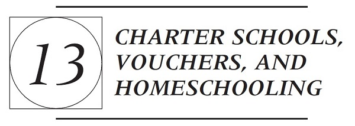

A. CHARTER SCHOOLS
1. Overview: Creation, Control, and Politics
The topic of charter schools tends to engender charged emotions and positions on both sides. Many, however, are unclear as to exactly what a charter school is, what benefits it purportedly offers, and why some contingencies are so staunchly opposed to them. The following article by Sandra Vergari answers several of these basic questions about charter schools. The article also explores the politics surrounding charter schools. As you read the article, pay close attention to what distinguishes a charter school from traditional public schools and private schools, and how charter schools are started. Also, consider whether the pursuit of improved educational opportunities is the driving force behind the charter school movement or whether the major political interests supporting charter schools are using education as the playing field to pursue a political ideology and a larger agenda. On the other side, consider whether the resistance to charter schools is born out of genuine educational concerns or just political reflex.
Sandra Vergari, The Politics of Charter Schools
21 Educ. Pol’y 15 (2007)
Charter schools, and other market-based reforms such as school vouchers and the student tutoring provision of the No Child Left Behind Act of 2001, are steeped in politics largely because they challenge the legitimacy of traditional power and funding arrangements in public education. These reforms are blurring conventional distinctions between “public” and “private” in education.
Charter schools are publicly funded entities that operate free from some or most of the regulations that apply to traditional public schools. The degree of regulatory freedom varies across [states] and the individual school charters. As originally conceived, charter schools are legally and fiscally autonomous entities that operate under contracts or charters. Negotiated between founders and authorizers, the charters address matters such as finance, governance, personnel, curriculum, and performance measures. The authorizers are public entities such as local and state school boards, university boards, the city of Milwaukee, the Indianapolis mayor’s office, and statutorily created charter school authorizer boards in Arizona and the District of Columbia. The authorizers monitor compliance with the charter and applicable state and local rules.
The decision to send a child to a charter school is made by a parent or guardian, not by a government entity. Charter schools may not charge tuition, and admissions processes must be nondiscriminatory. However, unlike traditional public schools, charter schools may cap enrollment. In return for regulatory relief, charter schools are supposed to be held accountable for their performance by their respective authorizers and by parental choice in the education marketplace.
Prior to the advent of charter schools, traditional public schools had contracted with private providers for noninstructional parts of education such as food services, custodial services, and transportation. Moreover, some school districts had engaged in contracting with private entities for the operation of entire schools, including management of student instruction. Although contracting with private providers for noninstructional services has been opposed by labor union advocates, it has been less controversial than contracting for fulfillment of the core mission of schooling. The quality of goods and services delivered in noninstructional areas is easier to assess than quality of student instruction. Most charter schools enjoy the freedom to contract with private entities for any number of services, including academic instruction and overall school operations. This private contracting is often beyond the control of school districts and teachers unions, thus provoking political controversy.
Charter schools are less controversial than school vouchers in large part because the charter school reform reflects fewer degrees of privatization than voucher plans. However, as a school choice reform, the charter school concept is much more controversial than intra- or interdistrict school choice programs that offer some decision-making power to parents but remain controlled by the traditional public school system.
In terms of delivery, charter schools are founded by individuals or groups based in the public or private sectors. In most states, a charter school governing board can hire a for-profit entity to operate the school, but the charter itself cannot be awarded to the for-profit company. A few states permit charters to be awarded to for-profit entities, and a few states prohibit for-profit entities from managing or operating charter schools.
On the matter of finance, charter schools may not charge tuition or levy taxes. They receive public funding from school districts and states and grants from the federal government. Charter schools may also seek and receive funding from for-profit entities, nonprofit organizations, and philanthropists.
Charter school governance is supposed to be genuine site-based decision making rather than government by school district boards. Charter school governing boards are not elected by the general public but are bound by open-meetings laws. Some charter school laws regulate board membership with provisions such as those that prohibit charter school employees and members of school district boards from serving on charter school boards and requirements that charter school boards include parents.
As publicly funded entities, charter schools are typically bound by state rules pertaining to academic standards and testing. Accordingly, the academic purposes and outcomes of a charter school are supposed to be aligned with those public requirements. On the other hand, charter school curricula and pedagogy may diverge from those of traditional public schools—in concert with the private preferences and interests of both school founders and families sending students to the school. Thus, the charter school landscape includes a diverse array of curricula and instructional approaches. For example, some charter schools emphasize training in foreign language, others emphasize the arts, some emphasize vocational education, and others emphasize college preparation.
Politics of the Charter School Idea
The traditional “educational establishment” has long enjoyed monopoly control of K-12 public education. Members of this “traditional coalition” include teachers unions, school boards associations, and school administrators associations; some personnel in state education departments; schools of education that prepare teachers and school administrators; and interest group allies.
During the past two decades, an opposing advocacy coalition, the “reform coalition,” has mounted a series of challenges to the policy monopoly long enjoyed by the traditional coalition. These challenges include efforts to introduce market-based policy to public education, and charter schools compose a significant policy victory for the reform coalition. Participants in this coalition include the business community (education outsiders); professors (located primarily in the social sciences); personnel in the U.S. Department of Education; private foundations, think tanks, and education reform interest groups; a number of governors; and presidents.
According to the traditional public school ideology, schools are operated and financed by the government and do not compete with one another. Public schools are viewed as essential for the equitable distribution of education and the reproduction of democratic values. “This ideology, at times almost a ‘religion’ of public schooling, is manifested vividly in the reactions of its advocates to proposals they view as ‘illegitimate,’ such as for-profit management of public schools.” In contrast, adherents of the market ideology—the other prominent “secular religion” on the education scene—maintain that self-interested actions on the part of individuals in a system of competition and choice will yield societal benefits.
Rochefort and Cobb observe, “At the nexus of politics and policy development lies persistent conflict over where problems come from and, based on the
answer to this question, what kinds of solutions should be attempted.” The two coalitions define the major problems in public education differently. The traditional coalition tends to emphasize educational inputs, whereas the reform coalition focuses largely on the outputs of public education. The traditional coalition maintains that the public education system is doing its best with extant resources and, with more resources, outcomes would improve. The reform coalition asserts that charter schools can make more efficient and effective use of the same funds allocated to traditional public schools. Moreover, because charters must be renewed periodically, and charter schools can be closed because of various problems (including lack of students), these schools are supposed to be more accountable than traditional public schools, which are rarely closed for poor performance.
Because of political motives, failure to recognize the scope of charter school issues, or both, some interests characterize charter school politics in terms of profit versus children, public schools versus privatization, Democrat versus Republican, conservative versus liberal, business versus teachers unions, individual interests versus democratic values, and competition versus complementarity. Such portrayals are inaccurate. The nature of the debate and the alignment of political interests surrounding charter schools are more complex.
The long-standing equilibrium in education policy has been disrupted by the reform coalition. The charter school idea is supported by a coalition that crosses Democratic and Republican party lines. For example, in 2001, shortly after Bush announced an education reform plan that included elements of privatization, competition, and choice, a group of “New Democrats” in Congress expressed support for greater competition and choice in education. The reform coalition also extends beyond those with a primary interest in privatization. The coalition includes low-income and minority families residing in underperforming school districts and their representatives and supporters. These constituents do not necessarily embrace privatization as a guiding ideological principle. Rather, they are interested in charter schools largely on the basis that they promise to bring greater equity to public education by providing both choice and high-quality education to populations at a disadvantage in the current public education system.
Charter school laws have been adopted across the United States despite strong opposition from members of the traditional coalition. A concern of the traditional coalition is that charter schools are contributing to new ways of thinking about the definition of a public school. Indeed, politically powerful teachers unions have worked to prevent the charter school reform from achieving legitimacy. The charter school laws in place demonstrate that the power of an idea sometimes prevails over the power of established political interests. As a result of political compromises, however, charter school laws in several states diverge significantly from the charter concept promoted by advocates. Therefore, charter school politics differ across state and local settings, in concert with differences across state laws and local political cultures.
Finance
In most states, when a student chooses to attend a charter school, the per-pupil funding that would otherwise be allocated to a traditional public school follows the student to the charter school. The traditional coalition asserts that charter schools are selfishly taking money away from public schools. The reform coalition asserts that charter schools are public schools and that public funds belong to families, not to school districts.
Across the nation, school districts have reported significant losses of revenue because of charter schools. In Buffalo, New York, where charter school enrollment was about 5,400 in 2005-2006, charter school payments composed nearly 10% of the district’s general fund. In cities across the nation, New Orleans has the highest percentage of public school students attending charter schools, at 69%. Dayton, Ohio, and Washington, D.C., rank second and third, respectively, in terms of charter school market share in a single locale, with about 25% of public school students in each jurisdiction attending charter schools. In each of 13 additional jurisdictions, at least 15% of the public school students attended charter schools in 2005-2006.
Nonetheless, compared to traditional public schools, charter schools often receive fewer per-pupil public funds. Some charter schools receive less than 100% of per-pupil operating revenue, and charter schools typically do not receive facilities funding equivalent to districts. Indeed, lack of access to comparable facilities funding is the foremost cause of funding discrepancies between charter schools and traditional public schools. Analyses of charter school finance also suggest that compared to traditional public schools, charter schools serving high-needs students in urban areas are not funded equitably and may be substantially underfunded. Charter schools may attempt to realize some cost savings in labor. Several studies indicate that teacher certification rates, experience, and salaries in charter schools lag those of teachers in traditional public schools.
Conclusion
Charter school politics are battles about competing definitions of the concept of public school—what a public school looks like, how it is financed and governed, how it operates, and how it is held accountable. As a public-private hybrid, charter schools compose a relatively moderate reform when considered in the context of plans that would retain the long-standing policy monopoly in public education and proposals for almost complete privatization through a public voucher system. The diverse nature of the charter school reform has made it attractive to constituents of different ideological and political persuasions. Indeed, both liberals and conservatives have founded charter schools.
The politics of charter schools offers a fruitful area of inquiry for analysts interested in privatization, the politics of research, and policy making for public education. Political and scholarly debates about the academic performance of charter schools are certain to continue. However, the future of charter school politics will be shaped not by student achievement data but rather by the values,
self-interest, mobilization efforts, and lobbying power of participants in the political arena.
NOTES AND QUESTIONS
1. Vergari points out that public schools routinely contract out various noninstructional educational services, such as food, transportation, and cleaning, to the private sector. Charter schools involve contracting out instructional services. Is there reason to contract out the former but not the latter?
2. The Department of Education will not fund charter schools that are owned and operated as for-profit institutions. The Ninth Circuit affirmed this position in Arizona State Board for Charter Schools v. United States, 464 F.3d 1003 (9th Cir. 2006). This ruling, however, would seem to present no barrier so long as a nonprofit owns the charter school and then contracts out educational services to for-profit entities. Is the possibility that some entity is profiting from the delivery of instruction to public students a basis on which to oppose charter schools, or does the ability of private entities to turn a profit simply show their efficacy?
3. What are the purported benefits of charter schools? What are the purported limitations or problems?
4. Should school districts have a monopoly over public education? Is competition a necessary component of school improvement? One asserted benefit of charter schools is that they will bring needed competition to public schools. Are traditional schools in a position to compete effectively with charter schools given that the model of traditional public schools is to provide broad-based services for communities, not to attract particular constituents? Is one possible result that charter schools will outcompete public schools for the best and most informed students and public schools will be left with the students charters do not want?
5. How, if at all, do the accountability systems of public schools and charter schools differ? Which is better?
6. Should charter schools receive the same per-pupil funding as other public schools? Should public schools lose funding when charter schools thrive? Is the funding for public schools “public money” that should stay with school districts, or does the money belong to individual parents who ought to be able to divert those resources to the schools they prefer?
Charter schools have enjoyed tremendous growth and policy support over the past two decades. As noted by Vergari, the first charter school was not opened until 1992 in Minnesota and, at the time, only one state other than Minnesota had legislation that even authorized the creation of a charter school. But the next year, eight states authorized the creation of charter schools, and the actual number of charter schools in operation grew to thirty-six. U.S. Dep’t of Educ., Evaluation of the Public Charter Schools Program: Year One Evaluation
Report (2000). Three years later, more than half of the states had authorized the creation of charter schools, the result of which was that the number of charter schools continued to expand exponentially, with their number doubling in each of the next several years. Id. By 2011, there were more than 5,000 charter schools in operation and nearly 2 million children enrolled in them. Nat’l Alliance for Pub. Charter Schs., Back to School Tallies: Estimated Number of Public Charter Schools & Students, 2011-2012, at 1 (Dec. 2011). By 2015, those numbers had jumped again to nearly 3 million students and almost 7,000 charter schools. Ctr. for Educ. Reform, Charter School Laws Across the States: 2015 Rankings and Scorecard 2 (2015). This growth has also produced significant shifts in education funding. Between 2008 and 2012 alone, funding for charter schools doubled in some states, while the funding for traditional public schools shrank or remained flat. See Derek W. Black, Averting Educational Crisis: Funding Cuts, Teacher Shortages, and the Dwindling Commitment to Public Education, Wash. U. L. Rev. (forthcoming 2017). Today, only eight states lack charter school legislation, four of which are in the upper northwest where student populations are relatively small and deconcentrated. Ctr. for Educ. Reform, supra at 92.
Federal legislation has likewise rapidly changed over the past two decades. It has gone from expressing passing interest to encouraging, if not compelling, states to adopt charters. The first federal funding of charter schools was in 1995 and was a mere $6 million appropriation. U.S. Dep’t of Educ., supra, at i. Within just five years, Congress had increased the appropriation to $145 million, which represented incredible growth, but which was still a minimal amount in relation to other education funding. Id. This trend of increase, however, continued in subsequent years with charter schools becoming a dominant federal strategy by 2009. In 2009, the Obama administration created a $4.5 billion competitive grant program designed to spur specific changes in educational policy. Each state’s eligibility for a grant was contingent on promoting charter schools and eliminating barriers to their growth. As the secretary of education proclaimed, “[s]tates that do not have public charter laws or put artificial caps on the growth of charter schools will jeopardize their applications under the Race to the Top Fund.…We want real autonomy for charters combined with a rigorous authorization process and high performance standards.” Press Release, U.S. Dep’t of Educ., States Open to Charters Start Fast in “Race to Top”: Education Secretary Seeking Autonomy with Real Accountability for School Innovators (June 8, 2009). In response, many states quickly dropped their traditional resistance to charters, the most important of which were explicit caps on the number of charter schools that could operate in a state. See, e.g., Maren Hulden, Charting a Course to State Action: Charter Schools and §1983, 111 Colum. L. Rev. 1244, 1253-1254 (2011).
What explains the increasing support for charter schools in recent years: their educational prowess, loss of faith in public schools, parental preference for choice, federal support, or something else?
2. Structure, Function, and Constitutionality
As their name indicates, charter schools gain their existence based on the grant of a charter from the state. The charter becomes a school’s guiding operational document and is, in essence, a contract with the state to deliver educational services pursuant to the specified conditions and requirements it sets forth. The exact details and contours of these charters are controlled by state statutes. As of 2015, 42 states had enacted charter school statutes, allowing for their creation. Ctr. for Educ. Reform, Charter School Laws Across the States: 2015 Rankings and Scorecard (2015). Eight states had not (Alabama, Kentucky, Montana, Nebraska, North Dakota, South Dakota, Vermont, and West Virginia). Id. at 92. But as a later case excerpt will explain, Washington’s statute was recently declared unconstitutional.
The exact structure and requirements for charter schools varies by state. In many respects, charter schools may resemble private schools or government contractors that have significant flexibility and independence in carrying out a basic function for the state. But in other respects, charter schools closely resemble any other public schools, as state statutes obligate them to comply with a host of other public laws, certification, reporting, and miscellaneous requirements.
While charter school statutes vary, they do tend to address common issues. First, while many states have recently changed their laws, some states continue to cap the number of charter schools they will authorize at a relatively low number. North Carolina, until recently, had capped the number of charter schools in the state at 100, which would amount to about one charter school per district. Mississippi has limited charter schools by requiring that the location in which they are to be created meets various criteria. For instance, the state allows for the conversion of public schools to charter schools, but only when the public school has been labeled as failing for three years. The result has been to limit the number of charter school conversions to 12 over a six-year period. Ctr. for Educ. Reform, 2011 Charter School Laws: CER Full Report 47 (2011). In other states, however, there are no caps on the number of charters a state will grant.
The second important aspect of charter school laws is who authorizes the creation of a charter school and the process for challenging denials of charters. In some states, the state board of education reviews and authorizes charter school applications, whereas in others the local school board or a special commission may do so. The third important aspect of charter laws is the extent to which charter schools must follow state curricula, administer state tests, and submit to ongoing oversight by the chartering authority. Finally, state statutes will dictate how charter schools are funded and at what level. These statutes may also dictate, to some extent, how charter schools spend those funds.
The most effective way of understanding charter schools is not, however, to examine those things charter schools have in common, but rather to closely examine how a particular state has organized its charter schools (understanding that other states may do it differently). The case below involves a constitutional challenge to California’s charter school law. Although California has since made changes to its charter school laws, the case provides a good explanation and
overview of how a charter school law operates. The case, like Vergari’s article, also discusses the politics motivating and opposing various aspects of the law.
Wilson v. State Board of Education
89 Cal. Rptr. 2d 745 (Ct. App. 1999)
A. The Legislature Has Plenary Power over Public Schools
As a preamble to addressing the amalgam of constitutional objections laid out in this appeal, we emphasize that the Legislature’s power over our public school system is plenary, subject only to constitutional restraints. Since 1879 our Constitution has declared the Legislature’s preeminent role in encouraging education in this state, as well as its fundamental obligation to establish a system of public schools: “A general diffusion of knowledge and intelligence being essential to the preservation of the rights and liberties of the people, the Legislature shall encourage by all suitable means the promotion of intellectual, scientific, moral, and agricultural improvement.” (art. IX, §1) “The Legislature shall provide for a system of common schools by which a free school shall be kept up and supported in each district at least six months in every year, after the first year in which a school has been established.” Id. §5.
There can thus be no doubt that our Constitution vests the Legislature with sweeping and comprehensive powers in relation to our public schools, including broad discretion to determine the types of programs and services which further the purposes of education.
Appellants first maintain that the [amendments to the Charter Schools Act] violate article IX, section 5 because they amount to abdication of any state control over essential educational functions, e.g., control over curriculum, textbooks, educational focus, teaching methods and operations of charter schools. This is so, they argue, because the parents and teachers who write the charters and the grantees who operate the schools now run the show with respect to all these functions.
Appellants confuse the delegation of certain educational functions with the delegation of the public education system itself. As explained in California Teachers Assn. v. Board of Trustees (1978), the public school system is the system of schools, which the Constitution requires the Legislature to provide—namely kindergarten, elementary, secondary and technical schools, as well as state colleges—and the administrative agencies which maintain them. However, the curriculum and courses of study are not constitutionally prescribed. Rather, they are details left to the Legislature’s discretion. Indeed, they do not constitute part of the system but are merely a function of it. The same could be said for such functions as educational focus, teaching methods, school operations, furnishing of textbooks and the like.
Moreover, appellants take too myopic a view of what it means for the state to retain control of our public schools, including charter schools. The Charter Schools Act represents a valid exercise of legislative discretion aimed at furthering the purposes of education. Indeed, it bears underscoring that charter schools
are strictly creatures of statute. From how charter schools come into being, to who attends and who can teach, to how they are governed and structured, to funding, accountability and evaluation—the Legislature has plotted all aspects of their existence. Having created the charter school approach, the Legislature can refine it and expand, reduce or abolish charter schools altogether. In the meantime the Legislature retains ultimate responsibility for all aspects of education, including charter schools. “‘Where the Legislature delegates the local functioning of the school system to local boards, districts or municipalities, it does so, always, with its constitutional power and responsibility for ultimate control for the common welfare in reserve.’”
B. Charter Schools Are Part of California’s Public School System
Appellants further complain that [the Charter Schools Act] has spun off a separate system of charter public schools that has administrative and operational independence from the existing school district structure, and whose courses of instruction and textbooks may vary from those of noncharter schools. Such splintering, appellants charge, violates the article IX, section 5 mandate to the Legislature to provide a “system of common schools.”
Article IX, section 6 defines “Public School System” as including “all kindergarten schools, elementary schools, secondary schools, technical schools, and state colleges, established in accordance with law and, in addition, the school districts and the other agencies authorized to maintain them.”
The key terms in these provisions are “common” and “system.” The concept of a “common” school is linked directly to that of a “free school,” which the Constitution mandates must be “kept up and supported” in each district for a prescribed annual duration. Historically, common schools were the “primary and grammar” schools, distinguished from other instrumentalities of the public school system by virtue of being the exclusive beneficiaries of the state school fund.
As to the concept of a system, we note that early on in California history “the contest was between a state system and a local system of common schools.” The notion of a single state system, under state control, prevailed [in] Piper v. Big Pine School Dist., 226 P. 926 (1924)[, where this court held the existence of federal school for Native Americans] within the territorial boundaries of Big Pine School District did not satisfy the mandate of article IX, section 5 because the state had no control over that school.
Thus the term “system” has come to import “‘unity of purpose as well as an entirety of operation, and the direction to the legislature to provide “a” system of common schools means one system which shall be applicable to all the common schools within the state.’” Serrano v. Priest, 487 P.2d 1241 (1971). This means that the educational system must “be uniform in terms of the prescribed course of study and educational progression from grade to grade.” Id. at 1241.
From this perspective it is apparent that charter schools are part of California’s single, statewide public school system. First, the Legislature has explicitly found that charter schools are (1) part of the article IX “Public School System”; (2) under its jurisdiction; and (3) entitled to full funding. As well, the Legislature
has directed that the Charter Schools Act “shall be liberally construed to effectuate [these] findings….”
Second, the establishment of charter schools does not create a dual system of public schools, as, for example, would be the case if there were a competing local system. Rather, while loosening the apron springs of bureaucracy, the Act places charter schools within the common system of public schools, as the following provisions illustrate: Charter schools by law are free, nonsectarian and open to all students. They cannot discriminate against students on the basis of ethnicity, national origin, gender or disability. Further, charter schools must meet statewide standards and conduct pupil assessments applicable to pupils in noncharter public schools; must hire credentialed teachers; and are subject to state and local supervision and inspection. Finally, beginning next year, charter schools must offer the minimum duration of instruction as required of all other public schools.
In sum it is clear that the Act brings charter schools within the system uniformity requirement because (1) their students will be taught by teachers meeting the same minimum requirements as all other public school teachers; (2) their education programs must be geared to meet the same state standards, including minimum duration of instruction, applicable to all public schools; and (3) student progress will be measured by the same assessments required of all public school students.
Moreover, the Act assures that charter schools will receive funding comparable to other public schools. In addition, it guards against the flow of funds to schools outside the system. For example, the Act prohibits the conversion of private schools to charter schools. It also bars charter schools from receiving any public funds for any pupil also attending a private school that charges the family for tuition.
C. Charter Schools Are Under the Exclusive Control of Officers of the Public Schools and Fall Under the Jurisdiction of the Public School System
Next, appellants contend that charter schools offend constitutional provisions calling for public schools to be under the exclusive control of officers of the public school system. We find no problem.
Article IX, section 8 provides in part: “No public money shall ever be appropriated for the support of any sectarian or denominational school, or any school not under the exclusive control of the officers of the public schools….”
This section endeavors to (1) prohibit the use of public funds to support private schools, whether sectarian or not; and (2) preserve strict separation between religion and public education. Appellants attempt to build the argument that charter schools are private, not public schools. They are convinced that under [the Charter Schools Act], officers of public schools have no real control over the educational product delivered by charter schools because these officers cannot deny a charter petition except upon finding that the educational program is unsound, the petitioners are “demonstrably unlikely” to
succeed in implementing the program, or that the petition lacks certain mandatory items. According to appellants, this means the charter grantees are in control, and again according to appellants, they are not officers of the public schools.
First, the terms of [the Charter Schools Act] belie these contentions. To begin with, charter schools are public schools because, as explained above, charter schools are part of the public school system. Further, the Legislature has specifically declared that charter schools are under “the exclusive control of the officers of the public schools.”
Second, one court construing the “exclusive control” language harkened back to early constitutional history, observing that “[t]he language of article IX, section 8, has remained unchanged since its proposal in the constitutional convention of 1878–1879 and its adoption by the People on May 7, 1879. The delegates were seriously concerned with assuring that public funds should only be used for support of the public school system they were creating. Thus, in another context a delegate expressed concern about any ‘opposition system of schools against the common schools of the State….’” Obviously charter schools are not in opposition to the public school system. On the contrary, they are a part of that system. Although they have operational independence, an overarching purpose of the charter school approach is to infuse the public school system with competition in order to stimulate continuous improvement in all its schools.
Third, we wonder what level of control could be more complete than where, as here, the very destiny of charter schools lies solely in the hands of public agencies and offices, from the local to the state level: school districts, county boards of education, the Superintendent and the Board. The chartering authority controls the application approval process, with sole power to issue charters. Approval is not automatic, but can be denied on several grounds, including presentation of an unsound educational program. Chartering authorities have continuing oversight and monitoring powers, with (1) the ability to demand response to inquiries concerning financial and other matters; (2) unlimited access to “inspect or observe any part of the charter school at any time”; and (3) the right to charge for actual costs of supervisorial oversight. As well, chartering authorities can revoke a charter for, among other reasons, a material violation of the charter or violation of any law. Short of revocation, they can demand that steps be taken to cure problems as they occur. The Board, upon recommendation from the Superintendent, can also revoke any charter or take other action in the face of certain grave breaches of financial, fiduciary or educational responsibilities. Additionally, the Board exercises continuous control over charter schools through its authority to promulgate implementing regulations. Finally, public funding of charter schools rests in the hands of the Superintendent.
Fourth, the sum of these features, which we conclude add up to the requisite constitutional control over charter schools, are in place whether a school elects to “operate as, or be operated by, a nonprofit public benefit corporation,” or whether it remains strictly under the legal umbrella of the chartering
authority. In other words, even a school operated by a nonprofit could never stray from under the wings of the chartering authority, the Board, and the Superintendent.
Fifth, speaking directly to appellants’ repeated concern that charter grantees will be making decisions about curriculum and similar educational functions and thus the necessary control element has been abandoned, we reiterate that these functions are details left to legislative discretion. With the Charter Schools Act, the Legislature has exercised its discretion to sanction a certain degree of flexibility and operational independence, thereby giving the nod to healthy, innovative practices and experimentation. Central to its intent is the goal of stimulating continuous improvement in all public schools by fostering competition within the public school system itself. And in any event, through their powers to deny petitions and revoke charters, chartering authorities do exercise control over these educational functions.
Sixth, as to appellants’ point that charter grantees are not officers of public schools, the law again belies this proposition. The Constitution gives the Legislature the “power, by general law, to provide for the incorporation and organization of school districts…of every kind and class, and [to] classify such districts.” Seizing this power, the Legislature has declared that “[a] charter school shall be deemed to be a ‘school district’ for purposes of Section 41302.5 and Sections 8 and 8.5 of Article XVI….”
Thus, under this scheme, charter school officials are officers of public schools to the same extent as members of other boards of education of public school districts. So long as they administer charter schools according to the law and their charters, as they are presumed to do, they stand on the same constitutional footing as noncharter school board members. If they violate the law, the charter will be revoked.
F. The Act Does Not Impermissibly Delegate Legislative Powers
Appellants’ final protest concerns the effect of the unamended Charter Schools Act, should we strike [the current amendments]. They insist that the underlying enactment amounts to an unconstitutional delegation of legislative powers to the Board and other chartering authorities. Specifically, they assert that the power to issue charters has been handed over without standards or guidance as to a whole quilt of concerns: decisions about curriculum, texts, educational focus, and teaching methods; minimum qualifications of charter grantees; [and] whether, through apt terms in the charter, to retain control over public educational functions of the charter schools. Appellants cast each of these issues as implicating “a fundamental policy decision which the Legislature [is] required to make….”
[A]ppellants misunderstand the legislative function. “Essentials of the legislative function include the determination and formulation of legislative policy. ‘Generally speaking, attainment of the ends, including how and by what means they are to be achieved, may constitutionally be left in the hands of others. The Legislature may, after declaring a policy and fixing a primary standard, confer upon executive or administrative officers the “power to fill
up the details” by prescribing administrative rules and regulations to promote the purposes of the legislation and to carry it into effect.’”
Here, the Legislature made the fundamental policy decision to give parents, teachers and community members the opportunity to set up public schools with operational independence. From there, the Legislature set limits on the number of charter schools that can exist at any particular time and their term; controlled against charter status by way of private school conversion; and fixed standards for charter schools. Having set the policy and fixed standards and limits, the Legislature did its job: “In the educational setting, legislatures rarely control public school operations directly, but delegate authority which permits state, regional, and local education agencies to establish school policies and practices.”
Reasonable grants of power to administrative agencies will not offend the nondelegation doctrine so long as adequate safeguards exist to protect against abuse of that power. Here, procedures are in place to safeguard the chartering authority decision-making process. These include procedures for review of denied petitions and open meeting requirements.
Finally, while it is obvious that appellants wish for more—and more detailed—standards and guidelines, more could not be better in this situation where a primary purpose of the Act is to encourage educational innovation, experimentation and choice in order to improve learning and expand learning opportunities for all students. How can you write the score to a symphony yet to be created?
NOTES AND QUESTIONS
1. One charge against charter schools is that, although they are funded with public money, they are effectively private schools and, as such, are not part of the public school system or subject to its laws. This court, at least, rejects that charge and emphasizes that charter schools are public schools. The fact that the state has delegated some of its educational authority to entities outside of the traditional public school districts does not make them any less public; it simply indicates that more than one type of entity is exercising delegated state educational authority. While this is true, does the amount of delegation and the discretion afforded therein to charter schools have any bearing on whether they are genuinely public? Consider New Orleans, where the traditional public schools closed in the aftermath of Hurricane Katrina and were replaced by charter schools. Danielle Holley-Walker, The Accountability Cycle: The Recovery School District Act and New Orleans’ Charter Schools, 40 Conn. L. Rev. 125, 128 (2007). Does a school system comprised entirely of charter schools amount to a system where the state has turned education over to private contractors, or would it be equivalent to a school district, just in a different form? What makes a school public: who operates it, who attends it, who funds it, who controls it, or whether tuition is charged?
2. The recognition of charter schools as state actors has important federal law implications as well, as state actors are subject to the U.S. Constitution.
Those aspects of charter schools that resemble a private contracting relationship, however, make charter schools’ state actor status more complex than traditional public schools. For instance, a student’s attendance at a charter school is voluntary. Suppose a state statute or the charter of the school indicates that students who voluntarily exercise the option to attend a charter school will attend it under a specific set of conditions, such as particular behavior, good grades, and so on. Could such a charter school remove students, without due process, based on a violation of these conditions under the theory that the student had waived his or her right to constitutional challenges by voluntarily enrolling in the school? At least one appellate court has, in effect, said yes. Scott B. v. Bd. of Trustees of Orange Cty. High School of Arts, 158 Cal. Rptr. 3d 173 (Ct. App. Cal. 2013).
3. The court indicates that charter schools are designed to insert competition into the public school system. A magnet school is the closest analogy to a charter school in terms of creating competition. Magnet schools do, in some sense, compete against other schools within a district, but magnet schools do not fall outside of the control, administration, and financial structures of the school district in which they reside. Thus, while individual schools might suffer from competition from a magnet school, the overall district should not be negatively affected. In contrast, charter schools are generally outside the structure of a school district and, thus, they have the potential to act contrary to the district’s interests. What role, if any, should competition play in public schools?
4. In some instances, charter schools can put the financial solvency and future viability of school districts in jeopardy. See generally Derek W. Black, Charter Schools, Vouchers, and the Public Good, 48 Wake Forest L. Rev. 445, 448 (2013); Mary E. Wright, Single/Majority Race Charter Schools: Charting a New Course in the Aftermath of the Failed Mandates of Brown v. Board of Education, 9 Rutgers Race & L. Rev. 1, 2-3 (2007). The problem is most acute in low-income districts whose student populations are small. Losing students can significantly drive up their per-pupil costs. This problem can be exacerbated by state policies that reduce the school district’s budget and direct those funds to charter schools. For instance, Chester Upland School District (CUSD) enrolls less than 4,000 students and has one of the lowest tax bases in Pennsylvania. Pennsylvania law requires school districts to provide charter schools with per-student funding. For each special education student enrolled in a charter school, CUSD was required to pay about $24,000. In total, CUSD owed the local charter school $43 million in 2012, which amounted to about half CUSD’s entire budget. This debt, among others, left the district with insufficient funds to pay its teachers and operate the regular public schools. After litigation, the state eventually agreed to assist the district with its debts. PA’s Chester-Upland School District Reaches Settlement in School Funding Lawsuit, Nat’l Educ. Access Network (Sept. 2012), http://schoolfunding.info/2012/09/pas-chester-upland-school-district-reaches-settlement-in-school-funding-lawsuit/.
5. Is the grant of flexibility to charter schools beyond what public schools have consistent with the notion or constitutional mandate of a uniform school system? Likewise, are charter school statutes that outline only general educational requirements consistent with the principles articulated by several courts
in the poverty chapter that the state must ensure qualitative education standards and outcomes? Do charter schools also heighten the possibility of unequal educational opportunities for those students excluded from high-quality charters or enrolled in low-quality charters?
League of Women Voters of Washington v. State
184 Wash. 2d 393 (2015)
In November 2012, Washington voters approved I–1240, codified in the Act, providing for the establishment of up to 40 charter schools within five years. The Act was intended to provide parents with “more options” regarding the schooling of their children. But the new schools came with a trade-off: the loss of local control and local accountability. Charter schools must provide a basic education, similar to traditional public schools, including instruction in the essential academic learning requirements, which are developed by the superintendent of public instruction. However, under the Act’s provisions, charter schools “free teachers and principals from burdensome regulations that limit other public schools” thereby giving charter schools “the flexibility to innovate” regarding staffing and curriculum. Charter schools are exempt from many state rules. With the exception of “the specific state statutes and rules” identified in RCW 28A.710.040(2) and any “state statutes and rules made applicable to the charter school in the school’s charter contract,” charter schools are “not subject to and are exempt from all other state statutes and rules applicable to school districts and school district boards of directors…in areas such as scheduling, personnel, funding, and educational programs.”
Under the Act, charter schools are devoid of local control from their inception to their daily operation. Charter schools can be approved in two ways. First, the Washington Charter School Commission, which is an “independent state agency” established by the Act and made up of nine appointed members, has the power to establish charter schools anywhere in the State. Second, school districts may apply to the Washington State Board of Education for permission to authorize charter schools. The commission and approved school districts (referred to as “charter school authorizers”) solicit charter applications, approve or deny applications, and negotiate and execute charter contracts. Charter school authorizers also monitor performance and legal compliance of charter schools, but such oversight cannot “unduly inhibit the autonomy granted to charter schools,” and such oversight must also be consistent with the principles and standards developed by another private organization, the National Association of Charter School Authorizers.
As for daily operation, charter schools are not governed by elected local school boards. Instead, charter schools are operated by a “charter school board,” which is “appointed or selected under the terms of a charter application to manage and operate the charter school.” The board is responsible for functions typically handled by an elected school board, including hiring, managing, and discharging employees; receiving and disbursing funds; entering contracts; and determining enrollment numbers.
As for funding, the Act requires the superintendent to apportion funds to charter schools on the same basis as public school districts. Such disbursements include basic education moneys appropriated by the legislature in the biennial operating budget for the use of common schools and moneys from the common school construction fund.
Analysis
We begin by noting what this case is not about. Our inquiry is not concerned with the merits or demerits of charter schools. Whether charter schools would enhance our state’s public school system or appropriately address perceived shortcomings of that system are issues for the legislature and the voters. The issue for this court is what are the requirements of the constitution. Accordingly, “[o]ur review here is limited to the issue of whether the voters acted in compliance with our state’s constitution in expressing their collective will.” “[W]hile initiative measures are reflective of the reserved power of the people to legislate, the people in their legislative capacity remain subject to the mandates of the Constitution.” Moreover, we have made clear that the initiative process is limited in scope to subject matter that is legislative in nature, that an initiative attempting to achieve something not within its power is invalid, and that the initiative power may not be used to amend the constitution.
Charter Schools Are Not Common Schools
This case turns on the language of article IX, section 2 of our state constitution and this court’s case law addressing that provision. Article IX, section 2 of the Washington Constitution provides:
The legislature shall provide for a general and uniform system of public schools. The public school system shall include common schools, and such high schools, normal schools, and technical schools as may hereafter be established. But the entire revenue derived from the common school fund and the state tax for common schools shall be exclusively applied to the support of the common schools.
In order to tap the funding sources identified in article IX, I–1240 declared charter schools to be “common schools.” The Act also directed that charter schools are to be funded “as other public schools,” and defined “[p]ublic schools” to mean “the common schools as referred to in article IX of the state constitution, including charter schools,” and other schools below the college level and maintained at public expense. Charter schools must report student enrollment and comply with applicable reporting requirements to receive state or federal funding. The Act directs the superintendent of public instruction to allocate funding for charter schools “based on the same funding criteria used for noncharter public schools,” and charter schools are “eligible to apply for student grants on the same basis as a school district.” The Act provides that charter schools “shall be included in the levy planning, budgets, and funding distribution in the same manner as other public schools in the district,” that school districts “must allocate levy moneys to a conversion charter school,” and
that charter schools “must be included in levy planning, budgets, and funding distribution in the same manner as other public schools.” The Act additionally declares that charter schools are “eligible for state matching funds for common school construction.” Moreover, I–1240’s voter’s pamphlet made clear to voters that the fiscal impact of the initiative was merely to shift existing school funding from existing (common) schools to charter schools.
Relevant here, I–1240 also provides that charter schools are “governed by a charter school board,” which is “appointed or selected…to manage and operate the charter school.” The charter school board has the power to hire and discharge charter school employees and may contract with nonprofit organizations to manage the charter school. I–1240 also makes charter schools “free from many regulations” that govern other schools. Charter schools are “exempt from all school district policies,” as well as “all…state statutes and rules applicable to school districts” except those listed in I–1240 section 204(2) and those made applicable in the school’s charter contract.
This case addresses the designation, funding, and control of charter schools as set forth in I–1240 and that initiative’s compliance with article IX, section 2. Accordingly, the case is largely determined by our prior decision in School District No. 20 v. Bryan, 51 Wash. 498, 99 P. 28 (1909). Intervenors ask us to “overturn Bryan,” but we decline to do so. Bryan has been the law in Washington for more than a hundred years and is repeatedly relied on as authority by Washington’s appellate courts. Intervenors offer no compelling reason to abandon Bryan. Similarly, the State asks us to “recognize an evolving common school system” and not read Bryan as “a static statement of constitutional imperatives.” But in Bryan this court established the criteria for evaluating a “common school” within the meaning of article IX, and warned, “The words ‘common school’ must measure up to every requirement of the constitution…and whenever by any subterfuge it is sought to qualify or enlarge their meaning beyond the intent and spirit of the constitution, the attempt must fail.” Bryan established the rule that
a common school, within the meaning of our constitution, is one that is common to all children of proper age and capacity, free, and subject to and under the control of the qualified voters of the school district. The complete control of the schools is a most important feature, for it carries with it the right of the voters, through their chosen agents, to select qualified teachers, with powers to discharge them if they are incompetent.
Here, because charter schools under I–1240 are run by an appointed board or nonprofit organization and thus are not subject to local voter control, they cannot qualify as “common schools” within the meaning of article IX.
The Charter School Act’s Funding Provisions Fail
As Bryan noted, when adopting our constitution the people of this state “endeavored to protect and preserve the funds set apart by law for the support of the common school from invasion, so that they might be applied exclusively to…such schools.” As discussed above, charter schools do not qualify as common schools. As explained below, by diverting common school funds to
charter schools, the Act contravenes article IX, section 2 of the Washington Constitution.
Our constitution requires the legislature to dedicate state funds to support “common schools.” Wash. Const. art. IX, §§2, 3. As noted, section 2 provides that “the entire revenue derived from the common school fund and the state tax for common schools shall be exclusively applied to the support of the common schools.” Id. Section 3 establishes a separate construction fund for the sole use of the common schools. Using any of those funds for purposes other than to support common schools is unconstitutional. This court has repeatedly struck down laws diverting common school funds to any other purpose.
Under the Act, money that is dedicated to common schools is unconstitutionally diverted to charter schools. As noted, the Act provides that charter schools are to be funded on the same basis as common schools. The superintendent must distribute money from the constitutionally restricted basic education allocation to charter schools on the same basis as common schools. In other words, under the terms of the Act’s provisions the source of funds for the operation of charter schools is the basic education moneys that are otherwise dedicated to the operation of common schools.
However, the constitution sets aside certain property and other moneys to establish a permanent fund for the exclusive use of common schools, referred to in article IX as the “common school fund.” Wash. Const. art. IX, §§2, 3. Article IX, section 2 also extended constitutional protection to any “state tax for common schools.” In Yelle, this court addressed the restrictions on the use of basic education funds allocated to common schools. Yelle struck down a law that would have diverted tax revenues allocated to the common schools to support a vocational rehabilitation program operated by a state board. Id. This court explained that it was “beside the question” that the vast majority of state funding in place at that time, whether derived from tax revenues or “cash on hand,” could have been allocated to other purposes in the first instance. Id. The constitutional protection afforded to common school appropriations is not dependent on the source of the revenue (i.e., the type of tax or other funding source) or the account in which the funds are held (i.e., the general fund or other state fund). Rather, this court held that all money “allocated to the support of the common schools…constitute[s] a ‘state tax for the common schools’ in contemplation of Art. IX, §2, of the constitution.” Id. Yelle continued, “[O]nce appropriated to the support of the common schools,” funds cannot “subsequently be diverted to other purposes.” This court cautioned that to hold otherwise “would be calamitous.”
Under the Act, charter schools receive funds from the legislature’s basic education allocation for the common schools. By statute, all of the basic education funds in the biennial operations budget are designated for the exclusive use of the common schools. These funds “made available by the legislature for the current use of the common schools” are then distributed annually by the Superintendent to “each school district of the state operating a basic education instructional program.” That the specific common school property levy is only a portion of the state funds used to support common schools does not alter the protection afforded to the entire basic education allocation as a “‘state tax for
common schools’” within the meaning of article IX, section 2. The Act unconstitutionally reallocates these restricted funds to charter schools, which do not qualify as common schools.
Compounding this problem, the State does not segregate constitutionally restricted moneys from other state funds. Nor can it demonstrate that these restricted moneys are protected from being spent on charter schools. Given this absence of segregation and accountability, we find unconvincing the State’s view that charter schools may be constitutionally funded through the general fund. Historically, the state common school funds were maintained in a separate public school account and distributed to the common schools by the Superintendent. While some other constitutionally restricted state funds continue to be maintained in separate accounts (e.g., common school construction fund (Wash. Const. art. IX, §3), gas taxes for transportation purposes (Wash. Const. art. II, §40)), since at least 1967, the constitutionally restricted common school property levy revenues have been deposited in the State’s “general fund,” which is used for the basic education allocation. There is no way to track the restricted common school funds or to ensure that these dollars are used exclusively to support the common schools.
Our constitution directs the legislature to establish and fund common schools and restricts the legislature’s power to divert funds committed to common schools for other purposes even if related to education. Const. art. IX, §§1–3. The Charter School Act’s diversion of basic education funds allocated to the support of the common schools and common school construction funds is unconstitutional and void.
We also disagree with the State’s view that the Act’s remaining provisions are saved because funding “follows the student” and in any event charter schools could be funded out of the state general fund. Br. of Resp’t/Cross–Appellant State of Wash. at 40. The fact that public school money distributions are generally based on per capita student attendance does not mean that common school funds are available for students who do not attend common schools. Where a child is not attending a common school, there can be no entitlement to “an apportionment of the current state school fund, to a credit predicated on attendance of children at such…school.” State v. Preston, 79 Wash. 286, 289, 140 P. 350 (1914).
In sum, the Charter School Act violates article IX, section 2 because charter schools are not common schools despite the Act’s attempt to so designate them. The Act’s designated funding mechanisms fail, and these provisions are not severable from the remainder of the Charter School Act.
QUESTIONS
1. Are there meaningful distinctions between the charter school system in Washington and California? Are there meaningful differences between the constitutional structures in the two states? Regardless, can the outcome in League of Women Voters be reconciled with Wilson, or was the Washington Supreme
Court simply anti-charter and the California appellate court pro-charter? Which has the correct perspective on charter schools? Which has the correct perspective on the courts’ role in adjudicating these questions?
2. What aspects of Washington’s charter statute render it unconstitutional?
3. Given the court’s rationale, does the state have any viable options for creating a charter system that complies with the constitution? Is the court’s reading of the constitution too rigid? Does it prevent the state from innovating in education? Is it inconsistent, on the one hand, to reason that the meaning of an adequate education must evolve with society, but other aspects of the education clause remain frozen?
3. Educational Outcomes
The rise of charter schools is partly explained by the public perception that they outperform public schools and deliver high-quality education. Many charters do, in fact, deliver excellent educational opportunities. For instance, the Knowledge Is Power Program (KIPP) charter schools have reported impressive results, in large part by using the flexibility of the charter school model to deliver 60 percent more instructional time than traditional public schools. See generally Diane Ravitch, The Death and Life of the Great American School System: How Testing and Choice Are Undermining Education 135 (2010). Many students who remain in KIPP charter schools have gone from being several years behind in learning to performing well above grade level. KIPP, Independent Reports, http://www.kipp.org/results/independent-reports (last visited May 12, 2016). KIPP charter schools are not alone in their success. In Massachusetts (an already high academically performing state), charters schools held four of the top ten slots on the state’s eighth-grade math test in 2008. Top Scoring Schools on the 10th Grade MCAS, boston.com (2008), http://www.boston.com/news/special/education/mcas/scores08/10th_top_schools.htm. Nationally, 15 to 20 percent of charter schools significantly outperform public schools. Ctr. for Research on Educ. Outcomes, Multiple Choice: Charter School Performance in 16 States (2009).
The value these high-performing charter schools bring to the communities they serve cannot be overstated, but data suggest they are far from the norm. Many charter schools struggle to perform at levels comparable to public schools and frequently underperform significantly. Only a few national studies of charter schools have been completed, but when comparing similarly situated students in traditional public schools to charter schools, the studies have tended to find that students in charter schools underperform. The U.S. Department of Education studied the results of the National Assessment of Education Progress and found that charter school students underperformed regular public school students in fourth-grade reading, fourth-grade math, and eighth-grade math. U.S. Dep’t of Educ., Evaluation of the Public Charter Schools Program: Year One Evaluation Report (2000). The only area that charter schools performed on par with public schools on these measures was in eighth-grade reading. A 2009 national study by Stanford University researchers was even more pointed. The study found that more than 80 percent of charter schools perform the
same or worse than public schools. Ctr. for Research on Educ. Outcomes, supra. A full 37 percent of charter schools performed significantly worse than comparable public schools. Id.
Critics also charge that studies that present charter schools as high performing and better alternatives than traditional public schools often leave out important facts and rely on inaccurate comparisons. First, while it is true that inner city charter schools may often outperform nearby schools or their surrounding school district, it is an overstatement to claim that inner city charter schools are outperforming public schools in general. Ravitch, supra at 138-144. Likewise, even where studies show charter schools outperforming local public schools, the students enrolled in those charter schools are often demographically advantaged in comparison to the public school population and, thus, the higher performance is not easily attributable to the charter school. But see Ron Zimmer et al., Charter Schools in Eight States: Effects on Achievement, Attainment, Integration, and Competition (2009). For instance, charter schools frequently enroll substantially smaller proportions of special education and English Language Learner students than the schools in their surrounding communities. See generally Robert A. Garda, Jr., Culture Clash: Special Education in Charter Schools, 90 N.C. L. Rev. 655, 681-689 (2012). In addition, the fact that charter schools require affirmative effort by parents to enroll their children would tend to indicate that charter schools have student bodies with highly motivated students or parents who are predisposed toward higher achievement. Ravitch, supra at 144. In short, studies finding that charter schools are outperforming public schools tend to compare a motivated and more monolithic group of nondisabled students who speak English as a first language to a local population that includes students with lower levels of familial support, lower levels of motivation, learning disabilities, and language barriers. When the achievement of students in charter schools is compared to the achievement of demographically similar students in regular public schools, the most favorable scholarly appraisal of charter schools is that “none of the studies detects huge effects—either positive or negative” of attending a charter school. Tom Loveless & Katharyn Field, Perspectives on Charter Schools, in Handbook of Research on School Choice 11-12 (Mark Berends et al. eds., 2009) (reviewing all the research on charter schools).
Newer research, however, suggests that charter school performance may be improving. A research group that had previously produced negative results on charter schools reached a different conclusion in a new 2013 study. It found that “[c]ompared to their likely [traditional public school (“TPS”)] alternative, the average charter school student now gains an additional 8 days of learning each year in reading, compared to a loss of 7 days each year in the 2009 report. In math, students in 2009 posted 22 fewer days of learning; today, charter school students have equivalent levels of learning in math as their TPS peers.” Ctr. for Research on Educ. Outcomes, National Charter School Study (2013). A 2015 study on urban charter schools reached even stronger findings to this effect, Ctr. for Research on Educ. Outcomes, Urban Charter School Study Report on 41 Regions (2015), although these newer findings have come under critique for the assumptions built into the methodology. See Derek Black, Charter School Study of Student Achievement Draws Criticism from All Sides, Educ. Law Prof Blog, July 17, 2013. For
a further explanation of why charter school data is difficult to interpret and subject to misuse by both sides, see Jeffrey R. Henig, Spin Cycle: How Research Is Used in Policy Debates: The Case of Charter Schools (2008).
Regardless of which studies are most compelling, none demonstrate that charter schools are inherently inferior or superior. Both sides of the debate may overstate the data so as to make their larger point about charter schools’ quality or lack thereof. Moreover, even if charter school performance lags behind, it may not be a failing of charter school pedagogy or curriculum, as opponents might suggest. As the earlier materials indicate, many charter schools operate under several other disadvantages related to financing and facilities. Thus, underperformance in these charter schools may be partially related to the start-up and financing barriers they face. Likewise, many high-performing charters have the financial support and backing of foundations and communities that ensure they have resources and instruction that exceeds what is available in traditional public schools. Thus, their success is attributable to factors other than charter school status. The overall point may be that generalizing charter schools is inherently problematic because they vary so much both within and between states.
4. Civil Rights Concerns
The demographic differences between charter schools and public schools alluded to in the student achievement discussion also raise substantive legal concerns. As detailed in the first seven chapters of this casebook, public schools are prohibited from discriminating against various disadvantaged groups and, in some instances, have affirmative obligations toward disadvantaged students. Very early in the charter school movement, civil rights advocates stressed the need to ensure that charter schools understood and complied with their legal obligations. They also emphasized that, to the extent policymakers did not emphasize goals like diversity, integration, and equal access in charter schools, charter schools might become part of the problem rather than the solution. The following report argues that policymakers did not heed these warnings. As you read it, consider whether charter schools are exacerbating segregation or whether they are simply trying to provide the best education possible to the most needy students, who also just so happen to live in highly segregated neighborhoods.
Erica Frankenberg, Genevieve Siegel-Hawley & Jia Wang, Civil Rights Project, Choice Without Equity: Charter School Segregation and the Need for Civil Rights Standards
(2010)
As the country continues moving steadily toward greater segregation and inequality of education for students of color in schools with lower achievement
and graduation rates, the rapid growth of charter schools has been expanding a sector that is even more segregated than the public schools. We know that choice programs can either offer quality educational options with racially and economically diverse schooling to children who otherwise have few opportunities, or choice programs can actually increase stratification and inequality depending on how they are designed. The charter effort, which has largely ignored the segregation issue, has been justified by claims about superior educational performance, which simply are not sustained by the research. Though there are some remarkable and diverse charter schools, most are neither. The lessons of what is needed to make choice work have usually been ignored in charter school policy. Magnet schools are the striking example of and offer a great deal of experience in how to create educationally successful and integrated choice options.
Our November 2009 report showed a critical lack of basic civil rights policy in state charter legislation. Our 2008 report on magnet schools showed that a significant share of magnet school programs has a clear policy favoring integration and that those with such policies had better outcomes. [The] new administration has given priority to expanding charters[, but] has not seriously focused so far on insuring that they embrace civil rights policies or on the better educational experience of magnet schools in combining choice and integration. The Obama Administration’s intense pressure on financially desperate states to expand charters, or lose urgently needed federal funds, should not further intensify segregation, especially for African American students. Since the great majority of states have very small fractions of students in charter schools now and have not chosen to expand them substantially, this federal pressure must be accompanied by unambiguous accountability and civil rights standards.
Across the country, desegregation opportunities for black students reached their peak about two decades ago, around the same time the achievement gap reached its narrowest point. This reversal, especially losing much of the remarkable achievement of integration in the South, makes it particularly distressing that charter schools enroll a disproportionate share of black students and expose them to the highest level of segregation. Almost a third end up in apartheid schools with zero to one percent white classmates, the very kind of schools that decades of civil rights struggles fought to abolish in the South. Many have no policies for transporting students from their segregated neighborhoods. There are large concentrations of charter schools in some of the nation’s most hypersegregated metropolitan areas, including Chicago and Detroit, and they too often create the illusion of real choice without providing the slightest challenge to the color and class lines that usually define educational opportunity. In fact, they offer even more extreme race and class separation without evidence of providing higher quality schooling. Charter school proponents include many teachers and educators who believe in integrated education and who, I believe, would respond to a civil rights and educational equity challenge from the [federal government].
In the Southwest, which includes five of the eight states in which Latino students have traditionally been concentrated and the great center of Mexican immigration, the record of charter schools is particularly disappointing. The
states of the Southwest were found by the Supreme Court in 1973 to have a history of discrimination against Latinos that paralleled the discrimination against blacks in the South. The region has experienced very sharp increases in segregation of Latino students since the l970s, and it is usually segregation by both race and poverty, and sometimes by language as well. This triple segregation is educationally devastating in most cases. Students often have few choices of schooling that offers a better chance to graduate, be ready for college, and be prepared to learn, live and work in an extremely diverse society.
In this region, however, Latinos are actually substantially underrepresented in the charter school population, and it appears little attention is being given in charter schools to those needing the most help: the millions of English language learners who grow up in Spanish speaking homes and whose English is not strong enough for regular educational progress. Little attention is given to the legal responsibility of these schools to accept and provide appropriate instruction for English language learners. Many schools fail to even report how many such students they enroll, and the available statistics suggest that these students are severely underrepresented.
A worrisome pattern in the Southwest and in some localities elsewhere, such as North Carolina, is the overrepresentation of whites in charter schools. The West has 55% nonwhite students in its public schools region-wide. It would be very damaging to invest public money in schools that finance white flight from regular public schools and take with the departing white students, state and federal funding badly needed for the students left behind in even more segregated regular public schools. The fact that a number of these “white flight” schools do not report any students on free lunch suggests that they may be segregated by both race and class. During the civil rights era, it was held to be illegal to create new school districts that intensified segregation. Regardless of whether it would also be held to be illegal to create new separate segregated entities now, it is certainly shoddy educational and civil rights policy.
A particularly disturbing aspect documented in this report is that there has been a very severe failure to collect essential basic data about charter schools. [M]any schools report no free lunch students, meaning that they either fail to offer free lunch and thus effectively exclude poor kids, or do not feel that it is necessary to report these statistics. Yet research shows a very deep relationship between concentrated poverty and inferior educational opportunities and outcomes.
In a nation where one-fifth of all children are born into homes where the parents don’t speak English (the vast majority Spanish-speaking), and a tenth of all students are classified as English language learner (ELL) students, basic equity as well as federal civil rights law requires that charter schools welcome and provide needed educational services for this large group of students. There is a shocking lack of basic data on enrollment of ELL students in charter schools, even in the state with by far the largest ELL population, California. Where data is available, it appears that ELL students are seriously underrepresented. If that is true, it is essential to examine whether or not charters are fulfilling their legal and educational obligations to this very important group of students who experience extremely high dropout rates. The government should act
immediately to require this data at the school level from all charter schools, and should investigate evidence of the causes of severe under-representation.
There are fine charter schools and some are richly diverse. There are also, however, many charters that are neither successful nor diverse and offer false hope. In the long term, it would be better to convert those strong charter schools to relatively autonomous parts of public school systems, since charters often have trouble in management, finance, and succession of leadership. In any case, we should keep and reward such schools. State and federal agencies supporting charters should learn the lessons of those charter schools that attain diversity and turn them into requirements for other charters. Federal civil rights officials and education officials should work to develop minimum civil rights standards and make them part of charter school funding. When funding is offered for schools of choice, magnet and pilot schools should always be fully eligible to compete in addition to charter schools. If there is evidence that schools are being planned to create racially exclusive educational institutions that would obviously violate federal civil rights law, these schools should be investigated and challenged by civil rights agencies.
The charter movement has flourished in a period of retreat on civil rights. As the vision of a successfully integrated society with real opportunities for historically excluded groups of students to enter the mainstream is revived, so could this become a defining characteristic of charter schools. Federal policy should make this a condition for charter assistance and support help for all charters to become what the best ones already are.
The theory of charters is that they can offer something unique because they are autonomous and can be creative in offering distinctive and excellent educational programs. Previous administrations may have believed that charter schools were superior just because they were not part of traditional public school systems. There is no evidence for that proposition, but well implemented choice schools do offer important possibilities. [Future legislation] should give each of these forms of choice equal and fair treatment in federal funding competition and that each should be expected to meet the same civil rights and accountability standards. Many parents trapped in weak schools want a choice. We need to make certain that the choices are good ones, that they are fairly available to all, and that they provide, as much as possible, real paths into the mainstream of American society.
NOTES AND QUESTIONS
1. A common retort to charges that charter schools are increasing segregation is that civil rights advocates are missing the point because the first priority of charter schools is to deliver high-quality educational opportunities for inner city students and pursuing integration could result in fewer seats and opportunities for the students these advocates intend to help. Civil rights advocates respond that these students are being disadvantaged and deprived of the best education
possible because they are still confined to a high-poverty school. Whose position is the most compelling? Is there a middle ground?
2. Is comparing charter schools, which tend to be concentrated in inner cities, to public schools in general the correct comparison? To the extent that urban charter schools are more segregated by race and class than public schools, it is often a result of the voluntary choice of low-income minority students to enroll in them. Is their enrollment in these schools a response to the underlying problem of segregated and unequal schools in their communities and, thus, the problem is not charter schools but the public schools themselves? Does this make charter schools an indictment of segregated and unequal schools rather than an example of them?
3. A recent study funded by charter advocates suggests a more complicated set of facts and that the effects of charter schools vary significantly based on locality. In a study of charter schools in eight states, the authors found
no systematic evidence to support the fear that charter schools are skimming off the highest-achieving students. The prior test scores of students transferring into charter schools were near or below local (districtwide or statewide) averages in every geographic location included in the study. In terms of prior achievement, in most sites, the transferring students did not differ substantially from other students in the [traditional public schools (“TPSs”)] they left: In a few sites, they were slightly higher achieving than their former peers; in other sites, they were slightly lower achieving, and, in Ohio and Texas, they were much lower achieving than their former peers. White students, who constituted a minority of charter entrants in all sites, deviated from the general pattern somewhat: In most sites, white students entering charter schools were, on average, slightly higher achieving than the white students in their previous schools.
Transfers to charter schools did not create dramatic shifts in the sorting of students by race or ethnicity in any of the sites included in the study. In most sites, the racial composition of the charter schools entered by transferring students was similar to that of the TPSs from which the students came. There is some variation: Transfers to charter schools tend to marginally reduce racial integration in Philadelphia and in Texas while marginally increasing racial integration in Chicago. We find suggestive evidence that African American students are more likely to self-segregate: African American students transferring to charter schools moved to schools with higher concentrations of African American students in five of seven locales.
Ron Zimmer et al., Charter Schools in Eight States: Effects on Achievement, Attainment, Integration, and Competition (2009).
A study of North Carolina, however, revealed a very disturbing trend. Helen Ladd, Charles Clotfelter, and John Holbein studied change in charter and public school enrollments over time. By measuring change over time, they were able to compare charters to themselves and public schools to themselves, mooting claims of unfair comparisons. The data showed that North Carolina charter schools have become “whiter” over time and, during the same period, traditional public schools more heavily populated by students of color. Helen Ladd et al., The Growing Segmentation of the Charter School Sector in North Carolina (NBER Working Paper 21078, Apr. 2015).
4. Even if states do not generally place diversity or integration goals on charter schools, should states limit the creation of charter schools that might undermine voluntary integration efforts of school districts like those discussed in
the first chapter? In the context of mandatory desegregation orders, courts took steps to prevent transfers to neighboring school districts that would undermine integration of the subject school district. See, e.g., Lee v. Eufaula City Bd. of Educ., 573 F.2d 229, 235 (5th Cir. 1978).
5. If magnet schools share many of the advantages of charter schools, but not the problem of segregation, should public policy focus more on expanding magnet schools and less on charters? The federal budget for magnet schools in 2010 was just at $100 million. The federal budget for charter schools was over $250 million and steadily rising. Erica Frankenberg & Genevieve Siegel-Hawley, Choosing Diversity: School Choice and Racial Integration in the Age of Obama, 6 Stan. J. Civ. Rts. & Civ. Liberties 219, 244 (2010).
PROBLEM
Identify the charter school statutes in your state (or in a neighboring state if your state lacks one). In reviewing the statutory language, pay close attention to which level of government has the authority to grant a charter, the standard under which it decides whether to grant a charter, the oversight and regulation of charters once they are established, and any restrictions the state places on the number of charters, the rights of teachers within them, or who may attend the charter.
Is the state’s charter school legislation consistent with state constitutional obligations it may have in regard to education (as interpreted by the state supreme court)? Does the legislation set standards that, in effect, require the approval of most charter school applications, or does it set sufficiently strict or discretionary standards that would allow the chartering entity to routinely decline charter applications? Which approach is best? Does the legislation provide sufficient protections to ensure that charter schools do not exclude special needs students or become more racially isolated than the traditional public schools? If not, how could the legislation better address this issue?
5. Charter Schools and the Larger Educational Reform and Choice Movements
Martha Minow, Reforming School Reform
68 Fordham L. Rev. 257 (1999)
What is the problem that the current reforms seek to address? American public schools are commonly described as “in crisis,” or failing to generate adequate levels of achievement. Another persistent charge addresses the disparate quality of educational opportunities between cities and suburbs, between public and private, and across other familiar social divisions. The contemporary push for reforms thus mirrors longstanding, potentially conflicting aspirations for American schooling: quality and equality. Universally available inadequate schooling would offer a tragic sort of equality; thus far, however, society has
had far more success generating individual schools of high quality rather than widespread high quality schooling.
The new reforms gather under the banner of “choice.” Rather than assigning students to public schools based on the location of their residence or some other characteristic, choice proposals would let parents and guardians select a school. In so doing, they seek to generate competitive pressures to promote higher quality schooling overall. In addition, choice proposals are said to afford some measure of equality. Voucher plans are meant to grant to poor and low-income families some of the latitude for selecting schools already enjoyed by families with enough resources to move to high quality suburban districts or to opt for private schools. Charter plans, offering resources to entrepreneurial groups interested in running innovative public schools, are intended to offer high quality options within the public system. Vouchers and charters also risk perpetuating inequality by excluding and segregating children with special needs, skimming from public schools those families motivated enough to take advantage of voucher and charter programs, and diverting resources from the project of improving the entire public school system.
In some respects, choice reforms try to redress failures of the last wave of school reform, the law-driven equality movement. Starting with racial desegregation, the push for equality expanded to gender equity, education rights for children with disabilities, bilingual and bi-cultural programs for English-language-learners, school finance reform, and even equal access for religious as well as non-religious student activities in public school settings. Each of these efforts reflects an underlying impetus to ensure equal opportunities for individual students, regardless of their race, gender, disability, linguistic and national background, economic class, or religion. Another way to perceive these reforms is to see them as extensions into our schools of the deep social struggles over group status and equality that pervade other sectors of the society. Under either formulation, these equality-based reforms absorbed enormous energy and dramatically reshaped schools and school practices around the country—with results both admirable and less than admirable.
Specific critiques of versions of school desegregation, special education for children with disabilities, school finance plans, bilingual education, and other equality reforms repeatedly appear in contemporary debates over reform. Yet the choice movement most immediately affects the equality reforms by rejecting their central features: centralized student assignment and bureaucratic compliance mechanisms. It may be coincidence, but the choice movement urges greater parental and guardian control over where and with whom each child will be educated after decades of desegregation orders and following more recent efforts to include children with disabilities in mainstream classrooms. Voucher and charter programs do not focus on either specific equality initiatives or their categorical approaches. Racial desegregation, school finance litigation, special education, and bilingual education may be once proud names of prior school reforms, but now they often are blamed, directly or indirectly, for the bureaucratization, fragmentation, and misallocation that needs redress.
Will today’s reforms themselves generate the pressing need for future reforms twenty or thirty years hence? I worry that the choice movement will
accelerate the already zany tendency noted by Linda Darling-Hammond, a wise observer of schools, who commented, “[s]chools chew up and spit out undigested reforms on a regular basis. This creates a sense within schools that whatever the innovation, ‘this too will pass’—and that it probably should.” Often it is difficult to evaluate education reforms because they come fast and furiously, with teachers and administrators sometimes participating and sometimes resisting. Schools are littered with the carcasses of partially or wholly abandoned school reforms. We have had school-based budgeting, computer-based learning, whole language reading, and back-to-basics. More recently, the standards movement has called for high expectations and the frequent use of standardized evaluations. It oversimplifies matters to suggest that new school reforms simply react to old ones. Yet the new reforms both implicitly and explicitly reject the older methods. In simple terms, the new reforms emphasize competition and standards, choice and incentives. The older efforts, framed by rights and remedies, focused on equality and fairness. The new reforms include valuable strategies but also faulty assumptions and dangers. The old reforms generated cumbersome bureaucracies and sometimes counterproductive court orders, but also provided fundamental values and protections.
Can we construct reform not by reacting against a prior wave, but instead by building upon it? Can we challenge what it means to reform schools by reforming reform? The very phrase, “reforming reform,” is gaining currency. It appears in contemporary efforts to fix what seems to have gone wrong with campaign finance reforms, Eastern European democratization, welfare reform, juvenile justice reform, bankruptcy reform, as well as school reform. Yet to be more than just another round of change, reformed reforms must anticipate what are usually the unanticipated consequences of the fresh turn of reforms. This can be done without waiting until current initiatives prompt still another demand for starting anew. It means starting with a sober evaluation of the claims and assumptions of the new reform movement. At the very least, this will reduce a new round of false promises and disappointments. It also means resisting the temptation to neglect goals that remain important because of the underrealization of other goals. Reforming reform involves learning to build constructively on the past while putting in place the capacity to learn from new initiatives.
For school reform, the relationship between equality and quality deserves sustained and simultaneous attention. Equality reforms hit the barriers of reaction, such as “white flight” in the face of desegregation orders and English-only referenda that have halted bilingual education in some communities. In trying to create remedies for unequal education along the lines of race, gender, language, disability, and financial inputs, the equality reforms also confronted the basic difficulties in elevating the quality of instruction and educational experiences. It makes sense, therefore, for current reforms to embrace the goal of quality through a combination of competition through choice mechanisms, and high expectations through standards. Yet the new reforms expose children to new risks of inequality by leaving some students in dismal existing schools and by making crucial to the selection of children’s schools the parents’ and guardians’ motivation and knowledge—qualities that are most certainly not equally distributed.
In hopes of preventing yet another reform movement’s demise and facile replacement by a similar successor, I here explore the limitations of both the choice and equality reforms. I identify potential common ground and synergies of present and past school improvement struggles. I will end by suggesting ways that legislators and other public bodies can craft choice reforms that sustain the commitments to both equality and quality.
I. The Choice Movement
The movement for educational choice may seem modest or almost marginal because it often involves small-scale experiments. Yet actually, the choice movement involves a radical challenge to the common school ideal that generated public schools and compulsory schooling from the nineteenth through the early part of the twentieth century. As Seymour Sarason recently observed, “charter schools rest on a devastating critique of the present system because it implies that for a school meaningfully to innovate to achieve more desirable outcomes, it must be free of the usual rules, regulations, and traditions of a school system.” If real innovation and desirable results are possible only for schools that diverge from the public school system, then the system itself is the problem. The choice movement thus represents a dramatic departure from almost all prior school reforms. Rather than aspiring to create the “one best system” of public schooling that is run by experts for all children, charter, magnet, and voucher-based education proposals seek to multiply options, promote competition, and concentrate the mechanisms for evaluation and accountability in the hands of individual parents. In theory, some measure of comparability and public accountability would then be sought through general, even legislated, standards to set expectations and methods for assessment.
The public school system itself is seen as the main source of obstacles to innovation and good outcomes. Injecting private choice, coupled with public standards, into the schooling business is supposed to bypass the bureaucracies of mediocrity to produce higher quality schooling. Indeed, eight distinct assumptions underlie the pursuit of quality by those who advance choice: (1) Competition will produce accountability. Schools that successfully secure student enrollments and waiting lists will do so because they offer desirable educational programming. Successful schools will attract students and unsuccessful schools will lose theirs. (2) Successful schools will grow and unsuccessful schools will shut down or change. Growth will occur as managers expand the number of seats they control or they will generate copycats; bad schools will fail to attract enrollments, and will lose sufficient funding to stay open and/or lose their public charters. (3) Competition among schools will generate sufficient, relevant, and comparable information for assessing the quality of each school. (4) Parents and guardians will seek out or otherwise obtain sufficient, relevant, and comparable information to enable them to make informed, responsive, and responsible choices. At best, a sufficient number will do so to signal to others how to choose or to trigger the appropriate signals to competing schools. (5) Competition will cut through burdensome bureaucracy that stunts educational innovation and responsiveness to parents and students. (6) Competition will permit desirable
pluralism in teaching methods and in the kinds of values and traditions to be emphasized. (7) Competition structured in these ways is well suited to the enterprise of educating children and youth. (8) Other reform efforts have not worked, so more radical change is necessary, even if it involves abandoning features of the common school ideal.
Th[is] final assumption behind current choice proposals is that radical change is necessary because prior reform efforts have failed to remedy chronic school crises. This assumption is overstated, yet, in my view, it is the most compelling of the entire set. It is overstated in part because measuring the success and failure of past educational reforms is complex and highly politicized. Using some calipers, contemporary education in the United States has never been better. More kinds of students are taught more equitably in American schools today than thirty years ago, and there are higher graduation and literacy rates today. Students who would have dropped out in the past are now often helped by special programs.
On other measures, however, there are real signs of failure. American schools are more racially segregated today than thirty years ago. They also are marked by extreme disparities in expenditures and quality within and between states. For example, the state in which a student lives has a profound impact on math achievement. Student performance in the United States on many measures (notably math) falls below student performance elsewhere (notably Taiwan, Korea, and Russia), although U.S. students perform better on reading comprehension. Even ostensibly good schools widely underestimate their students’ capacities. Urban and rural children are at serious risk of stultifying years in nearly futile classrooms.
We must do better. If we cared only about economic competitiveness in a global environment, we would have to improve the educational opportunities and achievement of all students because there are no students we can afford to waste. And surely we should care about equality and individual opportunity as values in and of themselves, as expressions of deep national and constitutional commitments, and as minimal necessities for the dignity of each person.
The assumption that American schools are in crisis neglects the real achievement of what appears to be the most inclusive school system in the world. The assumption that the common school project should be abandoned neglects promising results with recent efforts to improve public school systems. It turns out to make a real difference if we focus on bringing up those with trouble learning, if we teach for mastery, and if we reject the view that some kids just cannot learn.
American schools overall do not hold young people to the same high expectations prevailing in schools in many other countries. American schools reflect gross disparities in expectations and resources across state lines, between cities and suburbs, and between social classes and races. Some of these disparities are the legacy of inequalities not redressed in the last wave of school reform. Some, to be frank, were exacerbated by that wave. The flight of middle-class and largely white families from cities to suburbs has a large place in the decline in the quality of urban schools and the striking contrast with many public suburban school systems.
Whether the choice initiatives merely neglect equality goals or directly abandon them, they are flawed. Unless choice initiatives try to address the goal of equality along with quality, they will become illegitimate in the eyes of those still committed to the prior wave of reform. And they will likely generate yet another round of reforms precisely to remedy the new inequalities. If the new wave of reforms helps to generate drastic changes, to jump-start more profound efforts to raise educational opportunities for the least advantaged, and to raise expectations for all students, it could help to realize the still-unattained goal of equal opportunity and high quality schooling. But to get there, we need to consider both why those goals are as yet unachieved and what it would take for choice initiatives to help reach them.
IV. Steering the Waves
The biggest problem with the current phase of reforms is the familiar one of exaggeration. Exaggeration and simplification seem to have become simply part of the territory you have to know of mass democratic politics both in the statement of the problem—most schools are NOT in great or increasing crisis—and in the promise of solutions—quick, easy, and painless. We should know better than to believe recycled themes that can be discerned in almost all the waves of past school reform. Excessive claims seem necessary to get the lift and buoyancy needed for movement. But puffed up claims are waiting to be punctured.
What if we tried to mobilize around reforming school reform? Then we would talk of the costs of trying and discarding reforms that litter the lives of children. We would criticize new and prior reforms not as part of the perpetual puncture game, but as part of a demand for honest assessments of the mixed picture of the present and the mixed promises of any given initiative. School choice proposals admirably generate energy, initiative, creativity, and resources. Let us solicit new entrepreneurs to schools and substantial donations to end business as usual; let’s build high expectations for all children, and demand accountability of parents as well as school administrators. We also should acknowledge the limitations of past equality reforms. But we must not abandon either equality or the commitment to free, high quality education for all children. The challenge is not to shift schools into the private frame of markets, but to build the benefits of choice and competition into the public frame. The goal is not to get every kid into a private school, but to make all schools the kinds of places that give every kid the best possible fighting chance. The goal is to steer the wave rather than watch it crash across and inundate prior dreams.
In my view, building on the best of the past and the most promising features of school choice means expanding charter schools rather than vouchers for private schools. Charter schools remain within the public system. Therefore, they remain more likely to be tied to the mission of the public schools. They also can be encouraged to share information about successes and failures. Technical assistance can and should be available so that each individual school does not have to invent its own solutions to predictable start-up problems.
Even charter schools have incentives, however, to skim talented students who have active parents while abandoning others to less desirable schools.
Charter schools can and should be bound by the same admissions guidelines applicable to any other public school; preferably, charter schools should select randomly from the pool of those students who apply. Guidelines mean regulation, bureaucracy, and administration, but the entrepreneurship stimulated through charter schools can assist the development of better guidelines and more effective regulation. Just as industries now participate in negotiating over the specific details of environmental and safety regulations to produce more effective but less onerous rules, individual schools could participate in designing the means, but not the ends, of school regulations promoting equality and quality. Voucher plans also could be brought within this regulatory process to promote equality, although many private schools then would likely decline to participate.
The excitement and radical reconsideration opened by choice initiatives should be tapped to enlarge the range of good choices available to the most disadvantaged families. If residential segregation by race and class produces patterns of increasing school segregation, then genuine choice programs must transcend geographic and district borders. Cross-district choice programs and incentives to help suburban schools make room for urban students could make the promises of choice more genuine. So would college and university direct engagement in the tasks of supporting and mentoring classroom teachers, generating rich educational experiences for young children, and aiding in the collating and dissemination of crucial data.
School reform is always a symbolic as well as a practical fight. Schools afford an arena for fighting about what kind of society we should be, how the old and new generations should relate, whether commerce should govern democracy or democracy shall govern commerce, and how individual freedoms should be rendered compatible with the common good. It is imperative that the new round of school fights center as much on the symbols of inclusion and equality as upon the rhetoric of individualism and quality. These values need one another so that the whole is at least as worthy as the sum of the parts, if not perhaps more so.
School reform traditionally chews up and spits out undigested initiatives. What if school choice reforms afforded the occasion for building on the past while undertaking bold experiments. What if we recognized, as Audre Lorde put it, that “[w]e have the power those who came before us have given us, to move beyond the place where they were standing.” We must keep our commitments, if not quite our heads.
NOTES AND QUESTIONS
1. Why are new educational reforms constantly touted and policymakers always willing to alter public education? Is school choice, including vouchers and charters, just another passing fad, or is there reason to believe it will have staying power?
2. Have equality reforms failed? If so, in what ways and why? Do choice reforms, including charter schools, have the potential to fare better? Can choice and charters transform the entire public education system, or can they operate only at the margins? Minow suggests that rather than throwing away old reforms related to integration and finance equity we should build on them. Are our schools in need of radical change, or do we need to redouble our efforts at equality and integration? Are segregation and inequality intractable and, thus, we must pursue the best available options, such as choice and charters?
3. Minow notes that choice eschews one of the central tenants of many equality reforms: central student assignment policies. James Ryan, however, has argued that charter schools and other choice programs can be important elements of an integration strategy. James E. Ryan, Five Miles Away, A World Apart: One City, Two Schools, and the Story of Educational Opportunity in Modern America 16, 286-291 (2010). Choice programs, including charter schools, create the opportunity to integrate schools across district lines and metropolitan areas, and are more likely to garner political support than traditional desegregation techniques. Others like Minow have agreed with Ryan, although his premise is not without its skeptics. See, e.g., Wendy Parker, The Failings of Education Reform and the Promise of Integration, 90 Tex. L. Rev. 395 (2011) (book review of Ryan, supra).
4. Minow lists eight assumptions behind the notion that choice will deliver quality educational opportunities. Is each assumption sound?
5. Do choice programs accept the possibility that large numbers of children will not get access to quality education and, as a consequence, be left behind? If so, are choice programs inconsistent with the notion of a public education system and the national imperative to create a globally competitive workforce?
B. VOUCHERS
1. Legal Constraints
As Minow discusses in her article, vouchers are another important aspect of the choice movement. Voucher programs are designed primarily to allow students who cannot otherwise afford to attend a private school to do so. Through a voucher program, the state pays a portion, or all, of a student’s private school tuition. Voucher programs are touted as exit options for students trapped in failing inner city schools. They, however, have not been nearly as politically popular as charter schools, for several of the reasons that Minow identifies. Vouchers have also been beset by more significant legal challenges than charter schools. As discussed in the chapter on religion and its coverage of Zelman v. Simmons-Harris, 536 U.S. 639 (2002), many challenged voucher programs as impermissible support of religion because students disproportionately use the vouchers to enroll in private religious schools. The Supreme Court upheld the voucher program in Zelman, reasoning that a state law allowing students to use vouchers at religious schools, among various other secular schools, amounts to
nondiscrimination against religion, not affirmative support of it. Some state courts, however, have reasoned differently under their own state law principles of separation of church and state. Even if vouchers create no problem of separation of church and state, the next case reveals that vouchers are subject to some of the same constitutional education clause challenges that were levied against charter schools.
Bush v. Holmes
919 So. 2d 392 (Fla. 2006)
Pariente, C.J.
The issue we decide is whether the State of Florida is prohibited by the Florida Constitution from expending public funds to allow students to obtain a private school education in kindergarten through grade twelve, as an alternative to a public school education. The law in question authorizes a system of school vouchers and is known as the Opportunity Scholarship Program (OSP).
Under the OSP, a student from a public school that fails to meet certain minimum state standards has two options. The first is to move to another public school with a satisfactory record under the state standards. The second option is to receive funds from the public treasury, which would otherwise have gone to the student’s school district, to pay the student’s tuition at a private school. The narrow question we address is whether the second option violates a part of the Florida Constitution requiring the state to both provide for “the education of all children residing within its borders” and provide “by law for a uniform, efficient, safe, secure, and high quality system of free public schools that allows students to obtain a high quality education.” Art. IX, §1(a), Fla. Const.
As a general rule, courts may not reweigh the competing policy concerns underlying a legislative enactment. However, as is equally self-evident, the usual deference given to the Legislature’s resolution of public policy issues is at all times circumscribed by the Constitution. We make no distinction between a small violation of the Constitution and a large one. Both are equally invalid. Indeed, in the system of government envisioned by the Founding Fathers, we abhor the small violation precisely because it is precedent for the larger one.
Our inquiry begins with the plain language of the second and third sentences of article IX, section 1(a) of the Constitution. The relevant words are these: “It is…a paramount duty of the state to make adequate provision for the education of all children residing within its borders.” Using the same term, “adequate provision,” article IX, section 1(a) further states: “Adequate provision shall be made by law for a uniform, efficient, safe, secure, and high quality system of free public schools.” For reasons expressed more fully below, we find that the OSP violates this language. It diverts public dollars into separate private systems parallel to and in competition with the free public schools that are the sole means set out in the Constitution for the state to provide for the education of Florida’s children. This diversion not only reduces money available to the free schools, but also funds private schools that are not “uniform” when
compared with each other or the public system. Many standards imposed by law on the public schools are inapplicable to the private schools receiving public monies. In sum, through the OSP the state is fostering plural, nonuniform systems of education in direct violation of the constitutional mandate for a uniform system of free public schools.
A. The State’s Obligation Under Article IX, Section 1(a)
This Court has long recognized the constitutional obligation that Florida’s education article places upon the Legislature: “Article XII, section 1, constitution [the predecessor to article IX, section 1] commands that the Legislature shall provide for a uniform system of public free schools and for the liberal maintenance of such system of free schools. This means that a system of public free schools…shall be established upon principles that are of uniform operation throughout the State and that such system shall be liberally maintained.” State ex rel. Clark v. Henderson, 188 So. 351, 352 (1939). Currently, article IX, section 1(a), which is stronger than the provision discussed in Henderson, contains three critical components with regard to public education. The provision (1) declares that the “education of children is a fundamental value of the people of the State of Florida,” (2) sets forth an education mandate that provides that it is “a paramount duty of the state to make adequate provision for the education of all children residing within its borders,” and (3) sets forth how the state is to carry out this education mandate, specifically, that “[a]dequate provision shall be made by law for a uniform, efficient, safe, secure, and high quality system of free public schools.”
B. Article IX, Section 1(a): A Mandate with a Restriction
In the 1999 legislation creating the OSP, the Legislature recognized its heightened obligation regarding public education imposed by the 1998 amendment to article IX, section 1: “(1) FINDINGS AND INTENT.…The Legislature recognizes that the voters of the State of Florida, in the November 1998 general election, amended §1, Art. IX of the Florida Constitution so as to make education a paramount duty of the state. The Legislature finds that the State Constitution requires the state to provide the opportunity to obtain a high-quality education.” (1999). In 2002 legislation that renumbered the statutory provisions dealing with education, the Legislature made essentially the same finding in language that more closely tracked the language of article IX, section 1(a): “The Legislature finds that the State Constitution requires the state to provide a uniform, safe, secure, efficient, and high-quality system which allows the opportunity to obtain a high-quality education.” Although these statements purport to fulfill the constitutional mandate, the legislative findings omit critical language in the constitutional provision. In neither the 1999 nor the 2002 version of the OSP legislation is there an acknowledgment by the Legislature that the state’s constitutional obligation under article IX, section 1(a) is to provide a “uniform, efficient, safe, secure, and high quality system of free public schools.”
The constitutional language omitted from the legislative findings is crucial. This language acts as a limitation on legislative power.
The second sentence of article IX, section 1(a) provides that it is the “paramount duty of the state to make adequate provision for the education of all children residing within its borders.” The third sentence of article IX, section 1(a) provides a restriction on the exercise of this mandate by specifying that the adequate provision required in the second sentence “shall be made by law for a uniform, efficient, safe, secure and high quality system of free public schools.” The OSP violates this provision by devoting the state’s resources to the education of children within our state through means other than a system of free public schools.
We agree with the trial court that article IX, section 1(a) “mandates that a system of free public schools is the manner in which the State is to provide a free education to the children of Florida” and that “providing a free education…by paying tuition…to attend private schools is a ‘a substantially different manner’ of providing a publicly funded education than…the one prescribed by the Constitution.”
Although parents certainly have the right to choose how to educate their children, article IX, section (1)(a) does not, as the Attorney General asserts, establish a “floor” of what the state can do to provide for the education of Florida’s children. The provision mandates that the state’s obligation is to provide for the education of Florida’s children, specifies that the manner of fulfilling this obligation is by providing a uniform, high quality system of free public education, and does not authorize additional equivalent alternatives.
C. Diversion of Funds from the Public Schools
The Constitution prohibits the state from using public monies to fund a private alternative to the public school system, which is what the OSP does. Specifically, the OSP transfers tax money earmarked for public education to private schools that provide the same service-basic primary education. Thus, contrary to the defendants’ arguments, the OSP does not supplement the public education system. Instead, the OSP diverts funds that would otherwise be provided to the system of free public schools that is the exclusive means set out in the Constitution for the Legislature to make adequate provision for the education of children.
Section 1002.38(6)(f), Florida Statutes (2005), specifically requires the Department of Education to “transfer from each school district’s appropriated funds the calculated amount from the Florida Education Finance Program and authorized categorical accounts to a separate account for the Opportunity Scholarship Program.” Even if the tuition paid to the private school is less than the amount transferred from the school district’s funds and therefore does not result in a dollar-for-dollar reduction, as the dissent asserts, it is of no significance to the constitutionality of public funding of private schools as a means to making adequate provision for the education of children.
Although opportunity scholarships are not now widely in use, if the dissent is correct as to their constitutionality, the potential scale of programs of this
nature is unlimited. Under the dissent’s view of the Legislature’s authority in this area, the state could fund a private school system of indefinite size and scope as long as the state also continued to fund the public schools at a level that kept them “uniform, efficient, safe, secure, and high quality.” However, because voucher payments reduce funding for the public education system, the OSP by its very nature undermines the system of “high quality” free public schools that are the sole authorized means of fulfilling the constitutional mandate to provide for the education of all children residing in Florida. The systematic diversion of public funds to private schools on either a small or large scale is incompatible with article IX, section 1(a).
D. Exemption from Public School Uniformity
In addition to specifying that a system of free public schools is the means for complying with the mandate to provide for the education of Florida’s children, article IX, section 1(a) also requires that this system be “uniform.” The OSP makes no provision to ensure that the private school alternative to the public school system meets the criterion of uniformity. In fact, in a provision directing the Department of Education to establish and maintain a database of private schools, the Legislature expressly states that it does not intend “to regulate, control, approve, or accredit private educational institutions.” This lack of oversight is also evident in section 1001.21, which creates the Office of Private Schools and Home Education Programs within the Department of Education but provides that this office “ha[s] no authority over the institutions or students served.”
Further, although the parent of a student participating in the OSP must ensure that the student “takes all statewide assessments” required of a public school student, the private school’s curriculum and teachers are not subject to the same standards as those in force in public schools. [Public school teachers must have bachelor’s degrees, obtain particular grade point averages, pass certification standards, and submit to background checks, whereas private school teachers do not. Public schools must teach and test students based on a state mandated curriculum, whereas private schools may teach and test students as they see fit.]
In these respects, the alternative system of private schools funded by the OSP cannot be deemed uniform in accordance with the mandate in article IX, section 1(a).
E. Other Provisions of Article IX
Reinforcing our determination that the state’s use of public funds to support an alternative system of education is in violation of article IX, section 1(a) is the limitation of the use of monies from the State School Fund set forth in article IX, section 6. That provision states that income and interest from the State School Fund may be appropriated “only to the support and maintenance of free public schools.” Reading sections 1(a) and 6 of article IX in pari materia evinces
the clear intent that public funds be used to support the public school system, not to support a duplicative, competitive private system.
Conclusion
In sum, article IX, section 1(a) provides for the manner in which the state is to fulfill its mandate to make adequate provision for the education of Florida’s children—through a system of public education. The OSP contravenes this constitutional provision because it allows some children to receive a publicly funded education through an alternative system of private schools that are not subject to the uniformity requirements of the public school system. The diversion of money not only reduces public funds for a public education but also uses public funds to provide an alternative education in private schools that are not subject to the “uniformity” requirements for public schools. Thus, in two significant respects, the OSP violates the mandate set forth in article IX, section 1(a).
NOTES AND QUESTIONS
1. The legal theory to challenge Florida’s voucher program was similar to the challenge to the charter school statutes in California and Washington. In what ways are voucher programs, as a practical matter, similar to charter schools? In what ways are they different? Are these similarities and distinctions of constitutional significance? Does the court in Bush read the constitutional provisions too narrowly?
2. Insofar as regular public schools are the default public school system, is there any difference between the diversion of public money through vouchers and the diversion of public money to charters? In Wilson, the California appellate court reasoned that charters are public schools and are part of the system, but they are also contractors with the state and they may subcontract out the educational program to for-profit institutions. Does that make the difference between vouchers and charters one of form rather than function, or are there meaningful differences between the two?
3. Florida’s constitution includes a mandate of quality and uniformity. The court focuses on the latter, but insofar as voucher programs do not entail quality controls or monitoring of the receiving school, do vouchers raise constitutional quality concerns?
4. The court faults the voucher program because delivering education through varying private schools is inconsistent with the mandate of uniformity. Are public schools any more uniform in their quality and resources? If the lack of quality in inner-city schools is a primary motivating factor of students who opt for a voucher program, is a voucher effectively a remedy to the constitutional violations in their schools? Advocates have brought numerous suits against the state of Florida, charging that the inadequacies in their schools were a violation of the state constitution. See, e.g., Coal. for Adequacy & Fairness in Sch. Funding, Inc. v. Chiles, 680 So. 2d 400 (Fla. 1996); Haridopolos v. Citizens for Strong
Schs., Inc., 81 So. 3d 465, 466 (Fla. Dist. Ct. App. 2011); Sch. Bd. of Miami-Dade Cty. v. King, 940 So. 2d 593, 595 (Fla. Dist. Ct. App. 2006).
As discussed in the disability chapter, when a public school fails to provide appropriate educational opportunities to students with disabilities, they can be required to reimburse parents for tuition at private schools that can provide such an education. Prior courts in Florida have found that this diversion of public money to private schools does not violate the constitution. How is the special education context different? Are there potential amendments to the voucher program that would make it more similar to special education and thus constitutional?
5. Plaintiffs in Owens v. Colorado Congress of Parents, Teachers & Students, 92 P.3d 933 (Colo. 2004), also raised education clause challenges to a voucher program. The program in Owens was more narrowly tailored than the program in Florida. The only locations where vouchers would necessarily be available were in persistently low-performing schools. Even there, the statute included caps on the percentage of students in a district that could participate in the voucher program. The court, nonetheless, struck down the voucher program, although it did so under a different rationale than Bush. Colorado is one of six states whose constitution contains a local control provision, which vests certain constitutional authority in local districts. Thus, they are not mere delegates of the state, but, in some matters, are its equal. The court reasoned that vouchers divested local districts of their constitutional authority over instruction and misdirected locally raised tax revenues to private schools. See also Bd. of Educ. of Sch. Dist. No. 1 in City & Cty. of Denver v. Booth, 984 P.2d 639 (Colo. 1999) (recognizing the constitutional requirement for local control in Colorado). Overall, however, the results are mixed. In addition to Florida and Colorado, Nevada has declared its voucher program incompatible with the state’s commitment to regular public education. Lopez v. Schwartz, No. 15 OC 00207 1B, Order Granting Motion for Preliminary Injunction (1st Judicial District Court of Nevada, Jan. 11, 2016). But North Carolina, Ohio, and Wisconsin have upheld their voucher programs against education clause challenges. Hart v. State, 774 S.E.2d 281 (N.C. 2015); Simmons-Harris v. Goff, 711 N.E.2d 203 (Ohio 1999) (Establishment Clause issues appealed to U.S. Supreme Court); Davis v. Grover, 480 N.W.2d 460 (Wis. 1992). A distinct set of cases have challenged vouchers on other grounds, arguing that state constitutional amendments and laws prohibiting state aid to religious organizations prohibit vouchers for religious schools. See, e.g., Cain v. Horne, 202 P.3d 1178 (Ariz. 2009); see also Clint Bolick, The Constitutional Parameters of School Choice, 2008 B.Y.U. L. Rev. 335, 341-345 (discussing “Blaine” amendments and their potential limits on voucher programs). For a further discussion of those claims, see Chapter 9.
2. Educational Outcomes
As discussed with charter schools, advocates for choice frequently assert or assume that students will achieve at higher levels in schools they choose. The following article summarizes the data on point. The authors of this article find
even less support for vouchers than charters. The sample size for vouchers, however, is much smaller and thus harder from which to draw conclusions. Regardless, the weaker social science support for vouchers may also play a causative role in the decline of political support for vouchers.
Christopher Lubienski & Peter Weitzel, The Effects of Vouchers and Private Schools in Improving Academic Achievement: A Critique of Advocacy Research
2008 BYU L. Rev. 447 (2008)
Large-scale datasets allow researchers to control for many demographic and school-level factors known to affect achievement. However, such studies are unable to account for the built-in selection bias arising from the fact that some families choose private schools, while others do not—patterns indicating that there may be some “unobservable” qualitative differences between these two populations (e.g., motivation, commitment) that cannot be captured or controlled by researchers. Consequently, many researchers point to the possibility of constructing quasi-experimental studies of school effects to approximate randomized medical experiments, thereby controlling for unobservable factors. For example, when applicants for voucher programs exceed the number of slots available, seats can be assigned through lotteries or other randomizing techniques. This approach creates an experimental group randomly assigned a voucher and a control group randomly denied a voucher—two groups that can be assumed to be similar on all other observable and unobservable characteristics.
Interestingly, research on the achievement effects of voucher programs has generally not produced a clear consensus regarding student performance, while voucher advocates using randomization have tended to show benefits of the programs (although those studies have been heavily contested on methodological grounds). Publicly-funded voucher plans are a lightning rod for policy and advocacy battles, and not surprisingly, the older programs in the industrial cities of Milwaukee, Wisconsin and Cleveland, Ohio have attracted the most attention from researchers.
[The Wisconsin state legislature built an evaluation component into its voucher program, the official evaluations of which found no significant private school advantage. A follow-up study by Harvard’s Program on Education Policy and Governance (PEPG), however, demonstrated positive private school effects for voucher students, but the study was criticized as having methodological flaws. A third study “found no gains in reading and significant gains in math.”] A similar debate unfolded around Cleveland’s voucher program, where official evaluations initially found little or no advantages for students using vouchers. Subsequent re-analyses by PEPG found significant gains for voucher students, but were contested on methodological grounds. In addition, most recent studies find little advantage, or indicate the possibility of a negative effect of using a voucher.
In general, no clear consensus has emerged regarding evidence of academic gains or losses due to the use of private school vouchers. If any general finding is available, it is that positive academic outcomes stemming from voucher programs are modest at best, do not extend to most groups, and certainly do not rise to the level anticipated by the early optimistic assumptions advancing such programs. Nonetheless, many voucher advocates see an “emerging consensus” in the research using randomized models indicating that vouchers are effective at boosting student achievement. Yet, on closer inspection, it appears that such a consensus is on rather tenuous ground. In fact, the best and most recent evidence suggests that the “private school effect” on which voucher programs are premised is unsubstantiated.
[The authors find that those supporting vouchers selectively sight only to favorable research, which tends to be low in quality, and either ignore or mischaracterize favorable research.]
[T]he most recent generation of large-scale studies using nationally representative data suggests quite a different pattern with regard to the relative performance and effectiveness of public and private schools.
The National Assessment of Educational Progress (NAEP) is often referred to as “The Nation’s Report Card” because it is the only nationally representative, on-going assessment of American academic achievement in various subject areas. In 2003, NAEP assessments were administered to over 190,000 fourth graders from 7485 public, private, and charter schools and to over 153,000 eighth graders in 6092 schools. As expected, raw score comparisons found that private school students, on average, scored higher than public school students. The real question raised by this research, however, was whether differences in test scores between various school types—public schools or Catholic and other private schools—were primarily due to differences in the student populations served by these different sectors.
After the raw data were released by the federal government, two separate research teams independently conducted multi-level analyses of the raw NAEP data. After controlling for differences in demographic and location, the [federally funded study published in a peer-reviewed journal] found private school students to be performing at a level significantly beneath their public school counterparts in grade four. In grade eight, public schools outperformed Catholic and conservative Christian schools and were essentially similar to Lutheran and other private schools. In a similar study of NAEP data commissioned and heavily reviewed by the federal government, researchers at the Educational Testing Service used somewhat different assumptions and variables, but largely replicated the [federally funded study’s] findings.
The robust NAEP results consistently indicate that demographic differences between public and private schools easily account for the relatively high raw scores in private schools. After controlling for demographic differences, no private school means were higher than public school means to any statistically significant degree. Moreover, particularly at grade four, public schools actually scored significantly higher than private schools.
These large, nationally representative datasets offer unrivalled insights into the performance and effectiveness of different types of schools in the United
States. The findings regarding private and public school achievement, although notable, are not entirely without precedent. Despite common perceptions and claims of a consensus around this issue, several previous studies have called into question claims of a general, positive private school effect. The findings in these large studies regarding the relative effectiveness of public schools are significant in terms of their policy implications. Voucher programs are based specifically on the notion that private schools bestow an advantage on students in terms of achievement gains, especially when compared to public schools. That is, the idea of moving students from public to private schools to increase achievement is contingent upon the assumption that private schools are more effective at boosting achievement. However, the presumed panacea of private-style organizational models—the private-school advantage—is not supported by the more comprehensive data on student achievement. These data, at the very least, suggest significant reasons to be suspicious of consensus claims based on small-scale studies of non-representative data conducted by policy advocates.
There are many reasons one could support school choice, but evidence of inherently higher student achievement in private schools may not be among them.
NOTES AND QUESTIONS
1. What does the research indicate about the purported superiority of private schools? If they are not qualitatively better, what explains their higher achievement? If private schools are not necessarily qualitatively better than public schools, why do so many parents send their children to private schools?
2. If private schools are not better than public schools, why might students attending those private schools with vouchers nonetheless outperform their peers in public school?
3. The premise behind charter schools and voucher programs is that they bring competition to the public education system and competition produces better educational outcomes. Private schools are already subject to competition and possess the educational flexibility that reformers claim is necessary to improve public schools (hence the idea of relatively autonomous charter schools). If, however, students attending private schools through vouchers do not outperform similarly situated public school students, does the case for bringing competition to public schools, including through charter schools, fail?
4. A leading scholar in the area suggests a different approach to vouchers. Based on a child-centered approach, James Dwyer argues that the state has an obligation to ensure the quality of children’s education regardless of the setting in which they receive it. He emphasizes that not all private schools are well resourced and, to ensure quality education for the students enrolled in them, the state should make vouchers or public funding more widely available. In exchange for additional vouchers or funding, Dwyer would impose greater regulation on private schools, as opposed to current voucher programs that impose almost no requirements on private schools. James G. Dwyer, Vouchers
Within Reason: A Child-Centered Approach to Education Reform (2002). If Dwyer’s thesis of underresourced private schools is correct, the less than impressive overall performance of voucher programs and private schools may be misleading.
5. Are there reasons other than higher academic quality, or the lack thereof, that vouchers should be made available to students? What role should vouchers play in public education in the future?
3. Politics
James Forman, Jr., The Rise and Fall of School Vouchers: A Story of Religion, Race, and Politics
54 UCLA L. Rev. 547 (2007)
In Zelman v. Simmons-Harris, the U.S. Supreme Court upheld the constitutionality of a Cleveland program that provided school vouchers to low-income parents seeking private school alternatives for their children. Under Cleveland’s voucher plan, parents could theoretically use the voucher at religious schools, secular private schools, or suburban public schools. But few secular private schools and no suburban public schools chose to join the program. So, for most parents, the voucher option was a religious private school. Voucher opponents used this fact to argue that the plan amounted to state funding of religion and thus violated the First Amendment’s Establishment Clause. Zelman rejected this challenge, and the opinion was widely heralded as of great historical significance.
Yet, in the years since Zelman, school vouchers have made little political headway. They have been proposed in a variety of cities and states, but have overwhelmingly been rejected. This is just as true in states run by Republicans as in those led by Democrats. Since Zelman, only three jurisdictions have adopted voucher plans, while proposals have failed in over thirty-four states.
It is tempting to think that vouchers simply need more time to gain popularity—after all, Zelman was only decided five years ago. While that is surely part of the explanation for the slow growth of vouchers, it is not the only one. We can see this by comparing the relatively slow pace of voucher expansion to the rapid growth of two other forms of school choice that exploded in the preceding decades. Like vouchers, home schooling and charter schools were new innovations at one point. But they both grew much faster. In 1983 only four states had laws that explicitly permitted home schooling; ten years later all fifty states had such laws. Charter schools have had a similarly rapid rise. The nation’s first charter schools were authorized in Minnesota in 1991; by the 2004-05 school year, there were approximately 4000 charter schools in forty states and the District of Columbia.
Why have school vouchers failed to garner the support that so many assumed would follow the Court’s decision in Zelman? To answer this question requires looking back at the evolution of the school voucher movement.
I suggest that the story is one of religion, race, and politics. It is a story of religion because religious conservatives—especially Christian conservatives—once championed school vouchers and other forms of private school choice as their leading education priority. Christian conservatives were drawn to vouchers because they sought schools that would reinforce their religious beliefs and values—what I call the “values claim” for vouchers. The values claim was central for most of the history of the voucher movement.
This is a story about race, too, for the leaders of the voucher movement made a disciplined effort to define school vouchers as part of the struggle for racial justice and educational opportunity. In so doing, they developed an alternative rationale for school vouchers—what I call the “racial-justice claim”—which emphasized the right of low-income and minority parents to send their children to academically rigorous private schools. The racial-justice claim had political and legal advantages for the voucher movement. It attracted an additional constituency—black parents—and made voucher plans less vulnerable to Establishment Clause challenges. [H]owever, jettisoning the values claim that appealed to religious conservatives may have weakened the post-Zelman political movement for vouchers.
This is also a story about politics, for by the time Zelman was decided, a political consensus had emerged emphasizing the importance of “accountability” in education. Best captured by the federal No Child Left Behind legislation, the new politics of accountability increased state and federal oversight over individual schools and districts. For schools, it means less local control, more tests, stricter standards, and various other regulations imposed by governing authorities. Although No Child Left Behind does not govern private schools receiving vouchers, there is growing pressure for increased government oversight of those schools. This threat of governmental regulation is anathema to conservative Christian educators, driving them further away from a school voucher movement about which they were already increasingly ambivalent.
In the early twentieth century, the idea of giving parents public money to pay religious school tuition was advocated mainly by Catholics, who had long battled with Protestants over whose religion and values would be taught in school. Catholics lost this battle, and when they did, many left the public system. They built their own schools and sought state funding for them. State funding of private schooling had not initially appealed to Protestants but gained in popularity among a wider swath of religious voters in the 1970s and 1980s. The principal rationale was that the public schools were becoming increasingly secular and hostile to religion. Over time, courts had prohibited school prayer and the teaching of creationism. They also rejected a variety of challenges by religious parents to the secularism of school textbooks. In response to these defeats, evangelical Christians and others began to argue that parents should send their children to schools that reinforced, or at least respected, their core beliefs and values. Moreover, like the Catholics before them, they began to argue that those who made such a choice should receive some sort of government support. Otherwise, some would not be able to afford religious schools, and even those who could afford them would be forced to pay twice—once in taxes for
the public schools they did not use, and again for the religious schools that they did.
[D]uring the 1990s the values claim took a back seat as voucher advocates promoted a racial-justice claim in its place. This racial-justice claim came to define the litigation strategy in defense of vouchers, and was essential to achieving the legal victory in Zelman. The racial-justice claim asserted that vouchers provided educational emancipation for poor students, mostly black, trapped in dysfunctional urban districts. Vouchers were hailed as a way for these students to gain access to schools in which they could acquire the academic skills they needed to succeed in college and the workforce. This rationale for vouchers was a significant departure from the earlier theory that had attracted religious conservatives. Unlike the values rationale, the racial-justice claim did not assert that public schools were teaching the wrong values to children or contradicting the parents’ religion. Rather, it argued that the public schools were not teaching children the necessary academic skills, and that private schools could do better. Unlike the values rationale, the racial-justice claim did not defend the rights of all families whose values conflicted with school authorities. Under this claim, the victims were a smaller group of low-income, inner-city children.
[R]eplacing the values claim with the racial-justice claim [has had serious consequences]. On the one hand, the new voucher movement is more attractive to a contingent of African American parents and some of those sympathetic to their plight. On the other hand, it holds less appeal for religious conservatives. Religious conservatives had not, by and large, objected to schools on the ground that they were insufficiently academically rigorous, and they are less attracted to a movement that defines the problem in this way. Furthermore, the new voucher movement, wrapped in the mantle of racial justice, promotes school-choice programs that are targeted at low-income students in urban districts. White religious conservatives do not generally live in these urban districts and do not stand to benefit from the programs.
But even if voucher programs targeted at low-income urban districts did not appeal to religious conservatives, perhaps these limited plans would provide voucher proponents with a toehold that would position them to enact more expansive voucher plans. This was certainly the stated strategy of some voucher proponents. But I suggest a reason to question the effectiveness of this approach. I argue that the new voucher movement will have trouble attracting religious conservatives because of the rise of the accountability movement in education and its impact on voucher programs. The original movement for private school choice was grounded in the notion, shared by libertarians and religious conservatives, that private schools should be largely free of government regulation. Zelman, however, gave the green light to the new voucher movement at exactly the same time that state and national education policy had come to demand greater oversight of all schools, including private schools accepting vouchers. This accountability involves increased regulation of individual schools and demands that they provide information to various governmental authorities. This sort of regulation is opposed by religious groups generally and evangelical educators specifically. As a result, modern voucher programs are replete with government strings that many religious conservatives reject. This combination
of circumstances has led to a modern voucher movement that has received constitutional approval, but may lack the necessary political support to thrive. Thus, I predict that Zelman will end up mattering much less than many had thought it would.
NOTES AND QUESTIONS
1. Who is the real or core voucher constituency? To the extent the religious claim was jettisoned for the racial claim, one might query whether one or both of these groups were pawns for another constituency. Is the relative lack of success for vouchers attributable to the perception of the minorities that they were being used as pawns?
2. Foreman notes that charter schools and homeschooling have experienced significant expansion. To the extent those movements involved fewer legal uncertainties, their growth has had fewer impediments. By the time Zelman was decided, parents looking to exit from traditional public schools had options other than a voucher available. In particular, to the extent the purported key constituency in Zelman (inner city minorities) was not religiously motivated and charter schools were increasingly available, Zelman may have been largely irrelevant for parents. In short, timing may have limited the voucher movement.
3. Now that the Supreme Court has upheld vouchers that go to private schools, why have religiously motivated parents failed to reclaim the voucher movement?
4. What are the motivations for private religious schools to enroll voucher students who are not motivated by religion? What are the motivations of other private schools whose mission is purely one of academic excellence?
5. While vouchers have not garnered attention or support on par with charter schools, they experienced a major resurgence during the Great Recession. The growth was due in part to a change in rationale. Aimed at disadvantaged students, states traditionally imposed income eligibility caps on their programs. See, e.g., Zelman v. Simmons-Harris, 536 U.S. 639, 646 (2002); Jackson v. Benson, 578 N.W.2d 602 (Wis. 1998). More recently, however, states have raised or eliminated those income caps, making vouchers available to the middle class as well. Florida was the first state to make this major shift. After making changes to its program to comply with the decision in Bush, the state expanded its voucher program. At the outset of the recession, the state spent $87 million on vouchers. Fla. Dep’t Educ., Corporate Tax Credit Scholarship Program: June Quarterly Report (2009). By 2014, the state had all but eliminated income eligibility caps and drastically increased the amount it would fund per voucher. Fla. Dep’t Educ., Florida Tax Credit Scholarship Program Fact Sheet (Nov. 2015), http://www.fldoe.org/core/fileparse.php/5606/urlt/FTC_Nov_2015.pdf. The result was a quadrupling of voucher spending to $344 million. Id. Other states have followed a similar trajectory. See Derek W. Black, Averting Educational Crisis: Funding Cuts, Teacher Shortages, and the Dwindling Commitment to Public Education,
Wash. U. L. Rev. (forthcoming 2017) (discussing voucher growth in Indiana, Wisconsin, and North Carolina). What explains this shift in policy?
PROBLEM
A local nonprofit organization whose mission is to ensure quality educational opportunities for disadvantaged students is exploring the possibility of expanding voucher opportunities and needs your assistance in weighing its options and drafting proposed legislation. First, provide your candid appraisal of the extent to which vouchers are likely to meet the needs of disadvantaged students. Second, regardless of your answer to the first question, draft the basic statutory elements of a new voucher program. Your goal should be to propose legislation that is the most likely both to meet your clients’ interests and garner significant support in the legislature. What, if any, restrictions would you place on the students who are permitted to participate in the program? What, if any, restrictions would you place on the type of schools in which students may enroll (secular vs. nonsecular, public vs. private)? What, if any, regulations and requirements would you impose on the schools that enroll students through the voucher program? What amount or percentage of tuition would the voucher cover?
C. HOMESCHOOLING
1. A Constitutional Right?
Although not previously the case, all 50 states now permit homeschooling in some shape or fashion. The number of parents exercising this option for their children remains low, but their ranks are rapidly growing. About 1.5 million students currently attend a homeschool, which represents nearly 3 percent of the country’s total student population. U.S. Dep’t of Educ., The Condition of Education 2009, at 14-15 (2009). Parental motivations for this option are varied. Some question safety in public schools; others seek to shield their children from social influences; some prefer to focus their children’s education on religious matters; others simply believe they can deliver a higher quality of education at home; and, of course, many parents hold all of the motivations. Id. at 15. Many parents whose children are currently enrolled in public schools hold similar views, but due to time and resource limitations cannot exercise the same option. For this reason, the movement will likely hit a ceiling at some point in the near future. But regardless of the numbers, the movement raises several issues that are significant for both the parents who homeschool their children and the public school systems from which they are exiting. In addition to a broad overview of homeschools, the following materials address the most important issues: (1) the state’s authority to compel education; (2) the motivations of parents
seeking to homeschool their children and what they suggest about public schools; (3) whether the state has a responsibility to homeschooled students; (4) the extent to which homeschools are entitled to demand resources from the state; and (5) the extent to which states can regulate or prohibit homeschooling.
Pierce v. Society of the Sisters is not a homeschooling case, but the Supreme Court articulated several principles on which both the state and parents rely in defending their positions on homeschooling. The facts in Pierce involved Oregon’s attempt not only to compel all children to attend school, but to compel them to attend public school. The statute in question would have eliminated both private and home schools. As you read the case, note that the Court recognizes the state’s authority to regulate both public and private education, but it also recognizes the interest of parents in controlling their children’s education and pursuing it outside of public schools. Finding the right balance between these two interests is the challenge in homeschooling law and policy.
Pierce v. Society of the Sisters
268 U.S. 510 (1925)
These appeals are from decrees, which granted preliminary orders restraining appellants from threatening or attempting to enforce the Compulsory Education Act.
The challenged act, effective September 1, 1926, requires every parent, guardian, or other person having control or charge or custody of a child between 8 and 16 years to send him “to a public school for the period of time a public school shall be held during the current year” in the district where the child resides; and failure so to do is declared a misdemeanor. There are exemptions for children who are not normal, or who have completed the eighth grade, or whose parents or private teachers reside at considerable distances from any public school, or who hold special permits from the county superintendent. The manifest purpose is to compel general attendance at public schools by normal children, between 8 and 16, who have not completed the eighth grade. And without doubt enforcement of the statute would seriously impair, perhaps destroy, the profitable features of appellees’ business and greatly diminish the value of their property.
Appellee the Society of Sisters is an Oregon corporation, organized in 1880, with power to care for orphans, educate and instruct the youth, establish and maintain academies or schools, and acquire necessary real and personal property. It has long devoted its property and effort to the secular and religious education and care of children. It conducts interdependent primary and high schools and junior colleges, and maintains orphanages for the custody and control of children between 8 and 16. In its primary schools many children between those ages are taught the subjects usually pursued in Oregon public schools during the first eight years. Systematic religious instruction and moral training according to the tenets of the Roman Catholic Church are also regularly provided. It owns valuable buildings, especially constructed and equipped for
school purposes. The business is remunerative—the annual income from primary schools exceeds $30,000—and the successful conduct of this requires long time contracts with teachers and parents. The Compulsory Education Act of 1922 has already caused the withdrawal from its schools of children who would otherwise continue, and their income has steadily declined.
[T]he Society’s bill alleges that the [Act] conflicts with the right of parents to choose schools where their children will receive appropriate mental and religious training, the right of the child to influence the parents’ choice of a school, the right of schools and teachers therein to engage in a useful business or profession, and is accordingly repugnant to the Constitution and void.
Appellee Hill Military Academy [operates] for profit an elementary, college preparatory, and military training school for boys between the ages of 5 and 21 years. [Its grade structure and curriculum are essentially the same as that of the public schools, with the exception being that military instruction and supervision are included.] By reason of the statute and threat of enforcement appellee’s business is being destroyed and its property depreciated; parents and guardians are refusing to make contracts for the future instruction of their sons, and some are being withdrawn. The Academy’s bill alleges that the challenged act contravenes the corporation’s rights guaranteed by the Fourteenth Amendment.
No question is raised concerning the power of the state reasonably to regulate all schools, to inspect, supervise and examine them, their teachers and pupils; to require that all children of proper age attend some school, that teachers shall be of good moral character and patriotic disposition, that certain studies plainly essential to good citizenship must be taught, and that nothing be taught which is manifestly inimical to the public welfare.
The inevitable practical result of enforcing the act under consideration would be destruction of appellees’ primary schools, and perhaps all other private primary schools for normal children within the state of Oregon. Appellees are engaged in a kind of undertaking not inherently harmful, but long regarded as useful and meritorious. Certainly there is nothing in the present records to indicate that they have failed to discharge their obligations to patrons, students, or the state. And there are no peculiar circumstances or present emergencies which demand extraordinary measures relative to primary education.
Under the doctrine of Meyer v. Nebraska, 262 U.S. 390 (1923), we think it entirely plain that the Act of 1922 unreasonably interferes with the liberty of parents and guardians to direct the upbringing and education of children under their control. [R]ights guaranteed by the Constitution may not be abridged by legislation which has no reasonable relation to some purpose within the competency of the state. The fundamental theory of liberty upon which all governments in this Union repose excludes any general power of the state to standardize its children by forcing them to accept instruction from public teachers only. The child is not the mere creature of the state; those who nurture him and direct his destiny have the right, coupled with the high duty, to recognize and prepare him for additional obligations.
Appellees are corporations, and therefore, it is said, they cannot claim for themselves the liberty which the Fourteenth Amendment guarantees. Accepted in the proper sense, this is true. But they have business and property for which
they claim protection. These are threatened with destruction through the unwarranted compulsion which appellants are exercising over present and prospective patrons of their schools. And this court has gone very far to protect against loss threatened by such action.
Generally, it is entirely true that no person in any business has such an interest in possible customers as to enable him to restrain exercise of proper power of the state upon the ground that he will be deprived of patronage. But the injunctions here sought are not against the exercise of any proper power. Appellees asked protection against arbitrary, unreasonable, and unlawful interference with their patrons and the consequent destruction of their business and property. Their interest is clear and immediate, within the rule approved [in various] cases where injunctions have issued to protect business enterprises against interference with the freedom of patrons or customers.
The suits were not premature. The injury to appellees was present and very real, not a mere possibility in the remote future. If no relief had been possible prior to the effective date of the act, the injury would have become irreparable. Prevention of impending injury by unlawful action is a well-recognized function of courts of equity.
The decrees below are affirmed.
NOTES AND QUESTIONS
1. On what basis does the Court invalidate this statute? Is it true that the state has no competent interest here?
2. The education of children involves competing interests between the state, the parent, and the child. What is the state’s interest? Is it inconsistent with parents’ or children’s interests? How does this Court balance these interests, and what compromise does it strike? What other outcomes could the Court have reasonably reached?
3. What authority does the state have to compel education? Do parents have a constitutional right to control the education and upbringing of their children, or is the state simply limited in its authority to indoctrinate children? The Court in Pierce cites Meyer v. Nebraska, 262 U.S. 390 (1923), as precedent for a parental right to direct their children’s education. Meyer involved a statute that prohibited foreign language instruction prior to high school.1 The Court rejected the notion that the statute served a legitimate civic purpose (as opposed to anti-alien sentiments during the post–World War I period). The Court found that the statute impermissibly interfered with teachers’ rights to engage in their profession and parents’ rights to seek instruction from those teachers. An analogous case arose a few years after Pierce when Hawaii sought to severely restrict (if not extinguish) the operation of foreign language schools. Again, the Court struck down the regulation as an unreasonable restriction on private education. Farrington v. Tokushige, 273 U.S. 284 (1927).
4. To the extent parents have a right to control the education of their children, from where in the Constitution does this right emanate: freedom of expression, freedom of religion, or liberty rights protected by the Fourteenth Amendment? As you will see, subsequent courts will struggle with this question and whether any such right exists at all. Part of this uncertainty is due to the fact that the Court’s opinion in Pierce was decided before the First Amendment was incorporated through the Fourteenth Amendment and made applicable to the states (the Bill of Rights limits federal power, not state power, and thus requires incorporation through the Fourteenth Amendment to apply against states). See William G. Ross, The Contemporary Significance of Meyer and Pierce for Parental Rights Issues Involving Education, 34 Akron L. Rev. 177, 178-179, 183-184 (2000). Moreover, the existence of a constitutional parental right was not necessary to the Court’s holding. Nonetheless, the Court has subsequently cited Pierce as recognizing such a right. See, e.g., Wisconsin v. Yoder, 406 U.S. 205, 213-214 (1972); Griswold v. Connecticut, 381 U.S. 479, 482 (1965). A plurality of the Supreme Court recently reiterated this notion, albeit in the context of a noneducation case:
The liberty interest at issue in this case—the interest of parents in the care, custody, and control of their children—is perhaps the oldest of the fundamental liberty interests recognized by this Court. More than 75 years ago, in Meyer v. Nebraska, we held that the “liberty” protected by the Due Process Clause includes the right of parents to “establish a home and bring up children” and “to control the education of their own.” Two years later, in Pierce v. Society of Sisters, we again held that the “liberty of parents and guardians” includes the right “to direct the upbringing and education of children under their control.” We explained in Pierce that “[t]he child is not the mere creature of the State; those who nurture him and direct his destiny have the right, coupled with the high duty, to recognize and prepare him for additional obligations.” We returned to the subject in Prince v. Massachusetts, and again confirmed that there is a constitutional dimension to the right of parents to direct the upbringing of their children. “It is cardinal with us that the custody, care and nurture of the child reside first in the parents, whose primary function and freedom include preparation for obligations the state can neither supply nor hinder.”
In subsequent cases also, we have recognized the fundamental right of parents to make decisions concerning the care, custody, and control of their children. In light of this extensive precedent, it cannot now be doubted that the Due Process Clause of the Fourteenth Amendment protects the fundamental right of parents to make decisions concerning the care, custody, and control of their children.
Troxel v. Granville, 530 U.S. 57, 65-66 (2000).
5. Should the state’s power to regulate education impose a corollary duty on the state to ensure for the proper education of children?
The following article excerpt by Catherine Ross connects Pierce and its progeny to the question of whether parents have a right to homeschool their children and the extent of the state’s power to regulate it. Ross also discusses the recent resurgence of homeschooling and the motivations of parents pursuing it. Her article is followed by an excerpt by Judith G. McMullen that provides an overview of the various statutory approaches to homeschooling by the states.
Catherine J. Ross, Fundamentalist Challenges to Core Democratic Values: Exit and Homeschooling
18 Wm. & Mary Bill Rts. J. 991 (2010)
A. A Brief Legal History
The rise of formal schools and the adoption of compulsory school laws transformed schooling in nineteenth-century America. Beginning in the second quarter of the nineteenth century, the common school movement led by Horace Mann and other reformers resulted in the widespread availability of free public schools. Homeschooling virtually disappeared in the United States by the early twentieth century as states (beginning with Massachusetts in 1852 and ending with Texas in 1915) adopted and enforced laws requiring parents to make their children literate and, later, to send their children to a formal school for at least part of every academic year.
The constitutionality of one brand of compulsory school law reached the United States Supreme Court in 1925. In Pierce v. Society of Sisters, the Court overturned a compulsory school law that parents could only satisfy by enrolling their children in public schools, barring the use of sectarian or other private schools. The Court held that parents must have the right to choose among approved ways of satisfying the compulsory education law, but in doing so it underscored that the case did not challenge “the power of the State reasonably to regulate all schools, to inspect, supervise and examine them, their teachers and pupils; to require…that certain studies plainly essential to good citizenship must be taught, and that nothing be taught which is manifestly inimical to the public welfare.”
The Court has never fleshed out the extent of the state’s power to regulate independent schools. Today, the vast majority of states impose curricular requirements on private schools, and these requirements appear to be largely unchallenged. Similarly, the Court has never had an occasion to consider the reach of the state’s authority to regulate homeschooling, which is completely unregulated in states such as Alaska, and in other states subject to minimal requirements, ranging from mandatory notice to the state that the parents intend to homeschool to reporting and testing requirements regarding mastery of core curricular subjects such as reading and math. It stands to reason, however, that if states can regulate licensed private schools, the educational needs of children make it even more important for the state to provide minimum educational standards for children whose schooling takes place completely immune from the view of strangers.
Homeschoolers nonetheless frequently rely on the language in Pierce regarding parental rights for authority not only to teach their children at home, but also to do so without any government oversight at all. These arguments almost always fail. State courts and lower federal courts have repeatedly rebuffed assertions by sectarian schools and homeschoolers that they are constitutionally entitled to complete freedom from state oversight.
During the first half of the twentieth century, some state courts accepted defenses to charges of violating the compulsory school laws that would not be
credible today. When many people still lived in rural communities where transportation was limited, some courts excused parents who taught their children at home when the distances were too far and the town did not provide transportation or the travel conditions were too dangerous due to isolated country roads. Even then, however, school authorities were often unwilling to grant parents permission to teach their children at home where statutes provided discretion to do so.
By the middle of the twentieth century homeschooling had virtually disappeared, and its legal status was uncertain at best. It is estimated that by mid-century no more than 10,000 children satisfied the compulsory school laws by studying at home. Homeschooling without authorization left parents vulnerable to charges of child neglect because the state did not recognize homeschooling as a legitimate alternative to public schools or organized private schools.
Homeschooling experienced a gradual resurgence beginning in the 1960s, initially as part of a progressive movement influenced by educational theorists who favored unstructured learning. Starting in the late 1970s some state courts began to interpret the compulsory education statutes to allow parents to homeschool if they provided their children with an education equivalent to the training offered in the public schools. But as public schools adopted more progressive approaches to learning, “conservative and religious families were surprised to find themselves in a countercultural position” as they began to homeschool. Homeschooling remained illegal in the majority of states in 1981. Court decisions, combined with effective lobbying by Christian homeschoolers that prompted statutory reforms, led to a legal revolution so that by 2000, homeschooling was legal under some circumstances in all fifty states, whether by judicial decree or statute.
The question of whether homeschooling parents have violated the compulsory education laws often turns on whether the statutory language in the state’s compulsory education law provides a mechanism for an alternative to an organized, licensed school. Where it does not, some courts have allowed parents to claim that they run a private school in the sense contemplated by the statute. But even today, homeschooling as generally defined—parents teaching their own children at home—exposes parents to legal liability, shocking parents and home school proponents.
B. Who Homeschools and Why
While it remains a sliver of the educational landscape, homeschooling is growing rapidly. In 2007, the most recent year for which data are available, about 1.5 million children (or roughly 2.9% of school-aged children) were being homeschooled in the United States. Some experts predict that homeschooling will grow at a rate as fast as fifteen to twenty percent annually in some parts of the country.
Proponents of homeschooling emphasize that parents from all walks of life homeschool and that they do so for many different reasons. That is true as far as it goes. Homeschoolers live in every part of the country, include every race and religion, and fall at various points along the socioeconomic spectrum. The vast
majority of homeschoolers, however, are white and Christian, and they choose to homeschool because of their religious beliefs and their desire to protect their children from conflicting messages.
Federal surveys taken in 2003 and 2008 clarify the depth of religious conviction among homeschoolers. In 2003, seventy-two percent of homeschooling parents reported that one reason they teach their children at home is to provide “religious instruction.” By 2007, [that number rose to] eighty-three percent. Although in 2003 only thirty percent of homeschoolers called religious instruction their “primary” reason for teaching their children themselves, some other reasons offered as “primary” may reduce to religion. For example, homeschooling parents cite their desire to protect their children from “negative peer pressure,” much as the Amish parents in Yoder worried about the goings-on in high school. Muslims are also increasingly turning to homeschooling to protect their children from drugs and their daughters from “dressing like hoochies, cursing and swearing and showing disrespect toward their elders,” as well as to protect children from prejudice.
Homeschoolers also voice “dissatisfaction with academic instruction” offered in the public schools. We should interpret “dissatisfaction with academic instruction” in light of other things that we know about the attitudes of conservative Christian homeschoolers. Michael Farris, a founder of the Home School Legal Defense Association, has warned of the dangers of public education, which according to him include “promoting values that are questionable or clearly wrong: the acceptability of homosexuality as an alternative lifestyle; the acceptability of premarital sex as long as it is ‘safe’; the acceptability of relativistic moral standards.” We can infer that many homeschoolers’ concerns about instruction in the public schools likely include objections to sex education, evolution, gender equality, and the choice of secular curricular materials. As Rob Reich has pointed out, religious homeschoolers seek to give their children “a proper religious education free from the damning influences of secularism and pop culture” and they make no secret of that fact.
All of these primary reasons for homeschooling—both those that are expressly religious and those that resonate in a family’s conservative religious beliefs—indicate that almost ninety percent of parents who homeschool do so for reasons stemming from their religious beliefs. The survey data clearly confirm the anecdotal evidence suggesting that homeschooling is dominated by conservative Christians.
NOTES AND QUESTIONS
1. Should states encourage, discourage, or remain neutral toward homeschooling? Are parents’ motivations for homeschooling their children an important consideration in assessing homeschooling as an educational policy, or should educational quality be the only consideration? Ross argues in another portion of her article that shielding children from socialization and secular ideas is inconsistent with the state’s interests. Thus, homeschooling, regardless of the
quality of basic instruction therein, poses a challenge to our civic and constitutional values, particularly those related to tolerance. Whose interests should trump, the states’ or the parents’?
2. Many educators and policymakers approach homeschooling with suspicion or concern. What are those suspicions? Are they well founded? What is the relatively monolithic racial and religious demographic makeup of homeschools indicative of, if anything? Are public schools particularly hostile toward these groups, or are these groups hostile toward public schools?
2. Regulation of Homeschooling
Judith G. McMullen, Behind Closed Doors: Should States Regulate Homeschooling?
54 S.C. L. Rev. 75 (2002)
Although all fifty states and the District of Columbia have compulsory education laws, homeschooling is currently legal in all fifty states. State regulation of homeschooling varies widely, from states that have few restrictions to states that have many. Homeschooling laws have been characterized as falling into three separate categories: “private school laws, equivalency laws, and home education laws.”
The first category, “private school laws,” refers to states that treat a home school as a private school. For example, in Alabama the statute allows home schools to qualify as church schools if they “are operated as a ministry of a local church, group of churches, denomination, and/or association of churches.” Once this rather broad definition is met, there are no subjects required by state law, no minimum attendance requirements, no teacher certification requirements, nor any testing requirements. The homeschooling parent need only file a notice with the local school superintendent and maintain an attendance register. Similarly, children in Illinois who are attending a private school, where instruction is in English and “where children are taught the branches of education taught to children of corresponding age and grade in the public schools,” meet the requirements of the compulsory attendance law. As early as 1950, the Illinois Supreme Court established that a home school could be a private school.
Texas also treats home schools as private schools. In Texas, “home schools do not have to initiate contact with a school district, submit to home visits, have curriculum approved or have any specific teacher certification. Home schools need only have a written curriculum, conduct it in a bona fide manner and teach math, reading, spelling, grammar, and good citizenship.”
States having equivalency laws “exempt children from compulsory attendance laws if they are receiving ‘equivalent instruction’ elsewhere. While these laws may vary somewhat from state to state, it’s difficult to define ‘equivalent,’ and the burden of proof is on the state.” However, “equivalency states” may require more extensive paperwork by the parents. For example, Connecticut
allows a parent to homeschool if that parent “is able to show that the child is elsewhere receiving equivalent instruction in the studies taught in the public schools.” Connecticut State Department of Education procedures require parents to file a “Notice of Intent” form with the local school superintendent. Required information includes “name of the teacher, subjects taught, days of instruction, and the teacher’s method of assessment.” Although standardized tests are not required, “an annual portfolio review will be held with the parents and school officials to determine if instruction in the required courses has been given.” Connecticut recently considered legislation to impose more restrictions on homeschooling parents. These proposed changes were vigorously opposed by homeschooling advocates. And after homeschoolers reached an agreement with the Committee Co-Chair who supported the bill, the bill was allowed to die in committee.
Massachusetts provides another example of an “equivalency state,” because it allows parents to exempt themselves from compulsory attendance requirements by demonstrating that they are providing an equivalent education for their children. Massachusetts parents must obtain advance approval to operate a home school and must provide instruction in reading, writing, English, geography, arithmetic, drawing, music, United States history and constitution, citizenship, health, physical education, and good behavior. However, the local school authority may “not dictate the manner in which the subjects will be taught.” Periodic testing, progress reports submitted by the parents, or home visits (if approved by the parents) may be used to evaluate the progress of homeschooled children.
Home education law states have specific regulations that apply to home schools. These vary greatly from state to state and may include requirements for home teacher certification, curriculum, and other restrictions. As a practical matter, requirements may be similar to those imposed by states in the previous categories: the difference is that these states have a specific homeschooling statute.
For example, Ohio has a homeschool statute that exempts children from compulsory school attendance as long as the requirements of the statute are met. These statutory requirements include educational requirements for the parent who is doing the teaching (she must have a high school diploma, GED, test scores that demonstrate high school equivalence, or must work under the supervision of a person holding a baccalaureate degree until the children’s test scores reach a reasonable level); required courses (e.g., math, language arts, science); and testing requirements for gauging the children’s progress.
Another approach is demonstrated by the South Carolina homeschool statute, which offers three options to homeschoolers. The first option allows homeschooling if the school district board of trustees approves the instruction. However, the board must approve the instruction if the parents meet statutory requirements for parental qualifications (high school diploma, GED or baccalaureate degree), minimum days of instruction and hours per day, records, testing, curriculum, and library access. Options two and three exempt parents who are members of the South Carolina Association of Independent Home Schools or
another bona fide homeschool organization authorized by the statute from some of the Option one requirements, most notably testing.
In contrast, Wisconsin’s homeschooling law requires that a “statement of enrollment” be submitted annually to the department of education but does not impose minimum teacher qualifications and does not require standardized tests or other annual evaluation of student progress. Still another approach is illustrated by the North Carolina homeschooling statute, which requires teachers to have a high school diploma or GED, requires annual standardized testing of the children, and requires attendance and disease immunization records. These four states illustrate that there is no uniformity of requirements, even among states with specific homeschooling statutes.
QUESTIONS
What level of regulation should states exercise over homeschools? What justifies more regulation? What justifies less?
The following case offers a snapshot of one state’s approach to regulating homeschools, along with the legal challenges it generated. As you read it, pay particular attention to the fact that the plaintiffs rested their case on a general fundamental right of parents rather than a free exercise right.
People v. Bennett
501 N.W.2d 106 (Mich. 1993)
Brickley, Justice.
I
John and Sandra Bennett and their four children live in Wayne County. In 1986, the defendants were charged with four counts of failing to send their children to school. After a trial, the defendants were found guilty and fined $50 for each count.
The crux of the defendants’ convictions concerns their decision to withdraw their four children from public school. Dissatisfaction with the public school system was their stated reason for their action, not any religious belief. Defendants believed that they could provide their children a better education than the local public school, even though neither defendant is a certified teacher.
The trial court paid particular attention to the defendants’ claim that their children received instruction from certified teachers. Defendants asserted that two women, Pearl Wander and Julie Kuhar, provided instruction to the children. The court found, however, that the instruction provided by these women
did not satisfy the state’s requirements. Ms. Wander, for example, while certified to teach, was never shown to have actually visited the Bennett home. Instead, Ms. Wander had contact with the children through the occasional use of a speaker phone and the family’s occasional visits to the Clonlara campus for a total of four to six hours per month. This contact, the court found, was not sufficient to meet the state’s requirements. Rather, the court concluded, Ms. Wander’s role with respect to the children was that of a supervisor, not a teacher. With regard to Ms. Kuhar, the court noted that she was not in fact certified to teach at the time of her contact with the Bennett children. The fact that defendants were not substantially utilizing the services of a certified teacher and were not themselves certified to teach was sufficient for the trial court to find them guilty of failing to send their children to school.
II
Defendants argue that there is state and federal case law in support of their contention that, as parents, they have a fundamental right to direct their children’s education. We do not, however, find that the cited cases should be so interpreted. Indeed, we have not found and defendants have not presented any case that finds the existence of a Fourteenth Amendment fundamental right of parents to direct their children’s secular education free of reasonable regulation. We conclude that parents do not have such a constitutional right requiring a strict scrutiny standard. On the contrary, the state may reasonably regulate education, including the imposition of teacher certification and curricula requirements on home-school programs, in order to advance the legitimate interest of compulsory education.
Defendants contend that the Fourteenth Amendment guarantees them the fundamental right to direct the education of their children, even when the desire to direct education does not stem from any religious belief. Defendants cite Pierce v. Society of Sisters, 268 U.S. 510 (1925), for the proposition that it is beyond a state’s authority to interfere with parents’ choice of private education for their children. Similarly, defendants argue, the State of Michigan is telling parents that their children may be taught only by state-certified teachers, the same type of teachers who teach in public schools. Without explicitly so stating, defendants infer that because the state requires the same type of teachers for both private and public schools, it is blurring the distinction between these schools and thus interfering with a parent’s right to choose private schools for their children.
Defendants also quote at length from Wisconsin v. Yoder, 406 U.S. 205 (1972), which held that parents have the right to take their children out of high school and give them informal vocational training in order to protect sincerely held religious beliefs. The defendants noted in Yoder that the Supreme Court emphasized the case involved the “fundamental interest of parents, as contrasted with that of the State, to guide the religious future and education of their children. The history and culture of Western civilization reflect a strong tradition of parental concern for the nurture and upbringing of their children.”
The defendants’ reliance on most of the cases cited is misplaced because those cases deal with religious issues under the First Amendment. This case is
specifically not about religion and must be so considered. For example, in a broad sense, Pierce stands for the proposition that parents have a right to choose either public or private education for their children. In a narrow sense, Pierce has been interpreted as providing parents the right to direct the religious education of their children.2 In no sense, however, has Pierce been interpreted to mean that parents have a fundamental right to direct all of their children’s education decisions. Pierce does not, therefore, stand for the position that parents have a fundamental right to direct their children’s education under all circumstances, and so the defendants’ reliance on Pierce for this reason is mistaken.
The defendants’ misplaced reliance on Yoder is even more obvious. Hardly a page of that opinion can be read without seeing at least one reference to the parents’ religious beliefs. Indeed, the Court discussed the case in terms of having to balance the state’s interest in universal education with the First Amendment and “the traditional interest of parents with respect to the religious upbringing of their children….” In determining that the parents in Yoder could remove their children from school after the eighth grade in spite of the compulsory education laws, the Court specifically noted that it was dealing with a “centuries-old religious society,” and not “with a way of life and mode of education by a group claiming to have recently discovered some ‘progressive’ or more enlightened process for rearing children for modern life.” The defendants’ argument that Yoder lends support to the claim that parents have any rights to remove their children from school for nonreligious reasons is completely without merit.
In further support of their contention that the Fourteenth Amendment provides a fundamental right to direct the education of their children, defendants cite Meyer v. Nebraska, 262 U.S. 390 (1923), in which the state tried to prohibit private, denominational, parochial, or public schools from teaching in any language other than English to students who had not reached the eighth grade. Defendants contend that this case stands for the proposition that the state could not interfere in parental choices for children’s education in this manner because it interfered “with the power of parents to control the education of their own children.”
The defendants’ reliance on Meyer is misplaced partially for the same reason that reliance upon Pierce is misplaced. At issue in Meyer was whether a statute that prohibited teaching foreign languages denied the defendant teacher his liberty as guaranteed by the Fourteenth Amendment. The only reference to parental rights in the entire opinion consists of one sentence noting that the ban on languages had the effect of interfering with “the calling of modern language teachers, with the opportunities of pupils to acquire knowledge, and with the power of parents to control the education of their own.” While Meyer may have made one general statement concerning parental rights to control their children’s education, it certainly does not stand for the proposition that the
Fourteenth Amendment guarantees parents the fundamental right to direct their children’s education free from reasonable regulation.
Defendants contend that the Supreme Court’s most recent affirmation of this fundamental right is found in Employment Div., Dep’t of Human Resources v. Smith, 494 U.S. 872 (1990). Smith recognizes this parental right as fundamental, defendants contend, because it held that strict scrutiny must be applied when evaluating state actions that interfere with the rights of parents to direct their children’s education. In support of this contention, defendants quote Smith: “Yoder said that the Court’s holding in Pierce stands as a charter of the rights of parents to direct the religious upbringing of their children. And, when the interests of parenthood are combined with a free exercise claim…more than merely a ‘reasonable relationship to some purpose within the competency of the State’ is required to sustain the validity of the State’s requirement under the First Amendment.”
This, defendants conclude, “reaffirms the applicability of the compelling interest test to a claim of Fourteenth Amendment parental rights standing alone.”
Perhaps the defendants’ most creative interpretation is of the Smith decision. The quotation above explicitly states that it is only when the interests of parenthood are combined with the Free Exercise Clause (a claim defendants are not making) that parents are entitled to constitutional protection of a fundamental right. Nowhere in the opinion does the Court make as bald a statement as the defendants’ reading of Smith. Rather, as the state pointed out, defendants ignored Smith’s clear language and persistently maintain their position despite a directly contradictory holding.
Clearly the Supreme Court cases to which defendants refer do not support their contentions. Similarly, the home-school cases do not support the defendants’ claims. The parents in Mazanec v. North Judson-San Pierre School Corp., 614 F. Supp. 1152 (N.D. Ind. 1985); Ellis v. O’Hara, 612 F. Supp. 379 (E.D. Mo. 1985); and Care and Protection of Charles, 504 N.E.2d 592 (1987), all taught their children at home because of religious convictions. In fact, the Mazanec court specifically held that “within the ambit of the free exercise clause [there is] a constitutional right to educate ones [sic] children in an educationally proper home environment….” These cases do, indeed, recognize the choice of a home school as protected under a parent’s fundamental right, but only under the fundamental right to direct a child’s religious education.
Also of interest is the fact that, while defendants cited no Michigan home-school cases, there are at least two that are directly relevant. One is of particular importance because defendants were parties. In Clonlara, Inc. v. Runkel, 722 F. Supp. 1442 (E.D. Mich. 1989), the [c]ourt held that defendants (and one other home-school couple) “may have the right to choose home based education over public school education or other private school education. However, such home schooling, in the absence of a claim based on religious beliefs, may be subject to reasonable government regulation. Plaintiffs here have no fundamental right to educate their children at home free from reasonable government regulation.”
In Hanson, home-school parents argued that parents’ fundamental rights to direct their children’s education arose from the penumbrae of the First, Ninth, and the Fourteenth Amendments. While giving [the opinions in Meyer, Pierce, and Yoder] due consideration, the court concluded that the Hansons’ asserted rights were nothing more than personal or philosophical choices and were, therefore, not within the bounds of constitutional protection. The court, too, concluded that there is no fundamental parental right to direct a child’s secular education.
Having found strict scrutiny unnecessary because of the absence of a fundamental right, the state’s teacher certification requirement need only satisfy the minimal scrutiny test. In general, it can be assumed the state has an interest in seeing that all children within its borders are properly educated. We also find that ensuring the minimum competence of those entrusted to teach to be, at the very least, a legitimate state interest. Under the second part of the minimal scrutiny test, a state law prevails if it is in any way reasonably related to the state’s interest. Such a relationship is not difficult to establish because a challenge fails if the relationship is “‘at least debateable.’” [While it is true a state need not require that homeschool teachers are certified, we cannot articulate] any reason that the teacher certification requirement is anything but at least reasonably related to the state’s legitimate interest.
NOTES AND QUESTIONS
1. The court in Bennett emphasizes that the authority on which the parents rely for a right to control the education of their children is either misplaced or dicta. If the issue were to come squarely before the U.S. Supreme Court, what would the Court hold? Recall that as recently as 2000 a plurality of the Court asserted, without holding, that such a right exists. Troxel v. Granville, 530 U.S. 57 (2000). The refusal of lower courts to interpret prior case law as recognizing a fundamental right for parents may grow out the Supreme Court’s general position in recent decades of not recognizing “new” fundamental rights that are not explicitly guaranteed in the Constitution. See, e.g., Washington v. Glucksberg, 521 U.S. 702, 720 (1997); Reno v. Flores, 507 U.S. 292, 302 (1993). Nonetheless, parental rights, including those in regard to their children’s education, are arguably so obviously fundamental that they defy the need for specific articulation. In fact, the various quotes that the Bennett court indicates are dicta largely proceed on this notion.
2. Many parents bringing constitutional challenges to homeschooling regulations do so on both religious and general parental grounds. As suggested in Bennett, parents asserting a religious claim have been more successful in some cases. In fact, the Michigan Supreme Court itself struck down the teacher certification requirement as applied to parents because the regulation would interfere with free exercise of religion in homeschooling. People v. DeJonge, 501 N.W.2d 127, 129 (Mich. 1993). Are religious and nonreligious claims to homeschooling equivalent in their constitutional significance, or do they justify
differential treatment? Regardless, the religious interest in homeschooling clearly has its limits. It is not always altogether clear that compulsory education at private or public school interferes with religion, and some courts have sought to limit the scope of any religious interest in educating one’s child. Unable to identify any clear religious conflict between public education and religion, some parents have asserted so-called hybrid claims in which they have argued “that education of their children was more than a religious duty—according to them, education was religion itself,” which draws on the “‘the cultural strand within conservative Protestantism’ that views ‘all aspects of life, including teaching and learning [as] inherently religious.’” See also Catherine J. Ross, Fundamentalist Challenges to Core Democratic Values: Exit and Homeschooling, 18 Wm. & Mary Bill Rts. J. 991, 1002-1005 (2010). In short, parents believe it is their religious obligation to educate their children at home and free from state regulation. Several courts have rejected this hybrid claim. Combs v. Homer-Center Sch. Dist., 540 F.3d 231 (3d Cir. 2008), cert. denied, 555 U.S. 1138 (2009); Swanson v. Guthrie, 135 F.3d 694, 700 (10th Cir. 1998); Jonathan L. v. Super. Ct., 81 Cal. Rptr. 3d 571 (Ct. App. 2008). Yet, the Michigan Supreme Court in DeJonge countenanced the notion that state regulation interfered with the parents’ desire to deliver a “Christ-centered education.” 501 N.W.2d at 127.
3. Note that the parents in Bennett (and other cases) are not merely asserting the right to homeschool their children. All 50 states, statutorily or judicially, already extend parents that right. Rather, the parents are asserting the right to homeschool their children free, or largely free, of state regulation. This claim is a far more aggressive one. The state has a significant interest in ensuring the basic education of all children, and some form of regulation is necessary to achieve this end. Even once courts recognize a constitutional right to homeschool one’s children, exemption from all state regulation does not automatically follow. The state might have to justify its regulation as the least restrictive means for achieving its goals, but in regard to core aspects of education, the state could easily meet this burden in most instances. It is possible, however, that the state would need show only that its nonsubstantive regulations are reasonable. For instance, while individuals have a constitutional right to free speech, the Supreme Court has consistently upheld the state’s right to reasonably regulate the time, place, and manner of that expression, particularly in schools. See, e.g., Hazelwood v. Kuhlmeier, 484 U.S. 260 (1988); Bethel v. Fraser, 478 U.S. 675 (1986); see also Ward v. Rock Against Racism, 491 U.S. 781 (1989); Clark v. Cmty. for Creative Non-violence, 468 U.S. 288 (1984). Thus, it is far from obvious that a constitutional right to homeschool leads to the outcome that the parents in Bennett were seeking. What level of regulation is constitutionally reasonable or necessary as measured against a constitutional right to control the education of one’s child?
4. At the time of Bennett, Michigan’s statutes made no specific provision for homeschools. They were treated as equivalent to any other private school and subject to the same requirements as private schools, hence the certified teacher requirement. Michigan has since amended its compulsory attendance law and specifically allows homeschools as a distinct exemption from compulsory attendance in public school (although home schools remain free to register under the
exemption for private schools). Mich. Stat. §380.1561 (2010). Homeschools, however, must still provide “an organized educational program in the subject areas of reading, spelling, mathematics, science, history, civics, literature, writing, and English grammar.” Id.
3. Access to Public School Resources
The forgoing notes and materials discuss the extent to which parents have the right to homeschool their children and the extent to which the state can regulate homeschooling. They do not address what, if any responsibility, the state may have to assist parents in homeschooling or allow homeschooled students to participate in certain public programs. In particular, parents of homeschooled students have requested that their children be permitted to participate in various extracurricular activities and electives, such as athletic teams and band. More than half of the states do not grant homeschooled students any affirmative right to participate in extracurricular activities. See Paul J. Batista & Lance C. Hatfield, Learn at Home, Play at School: A State-by-State Examination of Legislation, Litigation and Athletic Association Rules Governing Public School Athletic Participation by Homeschool Students, 15 J. Legal Aspects of Sport 213, 223 (2005); see also Lisa M. Lukasik, The Latest Home Education Challenge: The Relationship Between Home Schools and Public Schools, 74 N.C. L. Rev. 1913, 1973 n.368 (1996) (noting that some state laws may give local districts the discretion to grant access to homeschooled students). In some states, parents have challenged prohibitions on nonpublic school students participating in extracurricular activities as a violation of their First and Fourteenth Amendment rights. Thus far, however, courts have generally been unreceptive to their claims. See, e.g., Pelletier v. Me. Principals’ Ass’n, 261 F. Supp. 2d 10 (D. Me. 2003); Jesuit Coll. Preparatory Sch. v. Judy, 231 F. Supp. 2d 520 (N.D. Tex. 2002); Thomas v. Allegany Cty. Bd. of Educ., 443 A.2d 622 (Md. Ct. Spec. App. 1982); Reid v. Kenowa Hills Pub. Schs., 680 N.W.2d 62 (Mich. Ct. App. 2004). But see Snyder v. Charlotte Pub. Sch. Dist., 365 N.W.2d 151, 153 (Mich. 1984). For a full overview of the law regarding access for homeschooled students and a discussion of the growing number of states that do provide access, see Christina Sim Keddie, Homeschoolers and the Public School Facilities: Proposals for Providing Fairer Access, 10 N.Y.U. J. Legis. & Pub. Pol’y 603 (2006). What are the arguments for and against providing access to homeschooled students?
PROBLEM
The hypothetical state of New Virginia has permitted parents to homeschool their children since 1990 with minimal regulation. The only requirements were that homeschooled students take a standardized test each spring to measure their academic progress and that their homeschool teacher have a high school diploma. In recent years, however, the state has been troubled by the finding that a substantial portion of homeschooled students are not
performing at grade level on standardized tests. Recognizing its constitutional duty to ensure that all students receive an adequate education, the state legislature is considering eliminating the option of homeschooling altogether. The state’s rationale is twofold. First, the restrictions on and monitoring of home schools necessary to ensure their adequacy would create too large of an administrative burden, too much tension with parents, and, ultimately, too large of a drain on resources needed for traditional public schools. Second, in today’s global economy, it is more important than ever that students receive a quality education, a crucially important part of which is education in pluralistic schools rather than homogenous isolated homes.
Would banning homeschooling under these circumstances be constitutional? Consider all sides of the issue: the parents’, the state’s, and the students’.
1 The statute was enacted following World War I, motivated by anti-alien sentiments, and directed primarily at German language instruction.
2 Note, however, the state’s argument that Pierce is limited as precedent because all discussion of parental rights was dicta. The state noted that Pierce struck down a law that eliminated alternatives to public education as an infringement upon private institutions’ property rights in conducting their businesses. It is conceded, however, that Pierce is better known for its discussion of parental rights than of property rights.